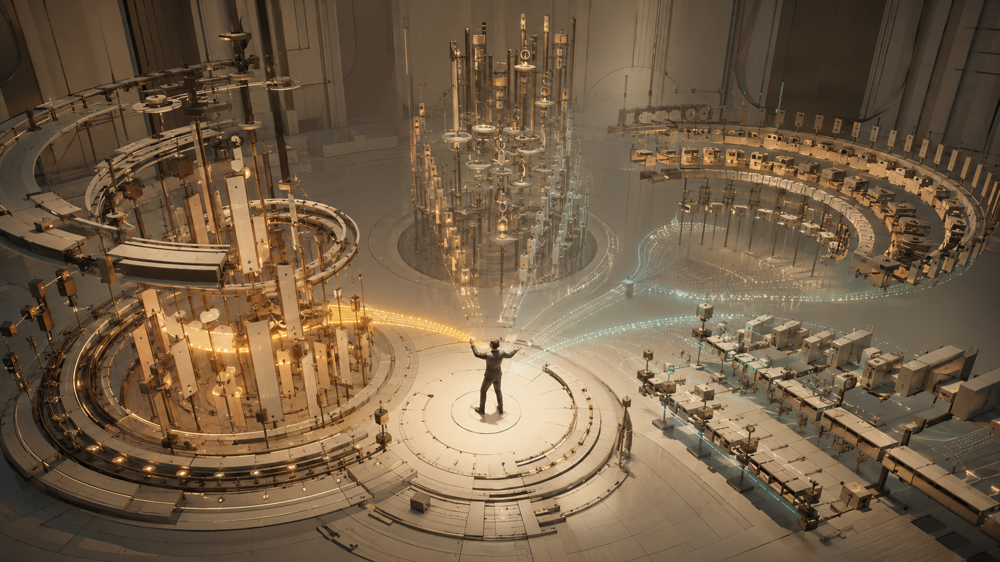

SAVRSE ĐÃ NGHIÊN CỨU RỘNG.
BÂY GIỜ CẦN TẬP TRUNG.
90 ngày tới không nhằm xây hai sản phẩm hoàn chỉnh. Mục tiêu là trả lời hai câu hỏi quyết định trước khi bỏ thêm vốn.
Toàn bộ trang này được xây từ Báo cáo nghiên cứu thị trường (RPT-4R2) và Kế hoạch kinh doanh (BP-4M v1.4). CEO đọc trang này là đủ để ra quyết định — không cần mở thêm tài liệu.
Đọc từ câu hỏi gốc"Có tổ chức nào thực sự ký và trả tiền cho một module đào tạo hẹp không?"
"Game có đủ hay, đủ khác biệt và đủ đáng chơi lại không?"
QUYẾT ĐỊNH TRONG 60 GIÂY.
SAVRSE ĐÃ NGHIÊN CỨU RỘNG. BÂY GIỜ CẦN TẬP TRUNG VÀO 2 HƯỚNG KIỂM CHỨNG CÓ GIỚI HẠN.
Đây không phải đề xuất làm hai sản phẩm lớn. Đây là đề xuất học hỏi bằng thử nghiệm có kiểm soát bằng hai chương trình kiểm chứng nhỏ, mỗi chương trình kiểm tra một nút thắt khác nhau.
Kiểm chứng thương mại trước: tìm một tổ chức thực sự trả tiền cho một module mô phỏng đào tạo hẹp, cùng đối tác chuyên môn.
Kiểm chứng sản phẩm trước: thử Pulse Deflector để biết cơ chế chơi có thú vị, đáng tin, khác biệt và đáng chơi lại không.
Đây là hai làn thử ở quy mô nhỏ có kiểm soát. Không phải ủy quyền cho hai chương trình sản phẩm quy mô đầy đủ. Chưa có cơ hội nào trong 10 cơ hội cuối được chứng minh là nguồn tạo tiền lặp lại của SAVA. Music World độc lập: TẠM DỪNG. Hướng Âm nhạc mới: KHÔNG phải Music World 2.
Sau khi đọc hết trang này, CEO sẽ biết chính xác vì sao. Bắt đầu từ câu hỏi gốc →Số liệu lịch sử của toàn BU. Không nhân đôi theo năm, không chia 6 gọi là chi phí tháng, không chia cho 27 người.
CEO được đề nghị phê duyệt: học hỏi / thử ở quy mô nhỏ có kiểm soát, không phải đầu tư quy mô đầy đủ.
Điều này dẫn đến câu hỏi tiếp theo: vì sao SAVA phải được đánh giá lại từ đầu?
"SAVA đang có VR. Vậy bán VR gì?"
Bắt đầu từ sản phẩm mình có, không từ nhu cầu khách hàng.
"Ở đâu có vấn đề thật, người dùng thật, người trả tiền thật và lý do thật để dùng VR / realtime 3D?"
Bắt đầu từ thị trường, sau đó mới áp mức phù hợp với SAVA.
TẠI SAO SAVRSE PHẢI QUYẾT ĐỊNH LẠI?
Savrse không còn là bài toán "có nên làm VR hay không". Câu hỏi thật: ở đâu có vấn đề, người dùng, người trả tiền và lý do thật để dùng 3D/VR?
VÌ SAO SAVRSE PHẢI ĐƯỢC ĐÁNH GIÁ LẠI?
CÂU HỎI: Chúng ta không bắt đầu bằng câu hỏi "Metaverse còn hot không?". Vì sao?
Không phải một thị trườngSavrse chạm vào nhiều không gian thương mại khác nhau: đào tạo, mô phỏng công nghiệp, truyền hình, trò chơi, giải trí, học tập.
Câu hỏi quản trị thậtTrong những nhu cầu khách hàng/người chơi có thật, nơi 3D/VR nhập vai có thể tạo giá trị, cơ hội nào xứng đáng nhận thêm nguồn lực của SAVA?
Bắt đầu từ thị trường, không phải từ sản phẩm cũTránh chọn ý tưởng chỉ vì công ty đã quen làm nó.
Đánh giá thị trường trướcChỉ sau khi xếp hạng thị trường được khóa, mới đưa mức phù hợp của SAVA vào.
KẾT LUẬN: Trước tiên đánh giá thị trường. Chỉ sau đó mới áp dụng mức phù hợp với SAVA.
VÌ SAO: Nếu bắt đầu từ "SAVA đang có gì", công ty sẽ chỉ nhìn thấy những gì quen thuộc và bỏ lỡ những nhu cầu có người trả tiền thật.
VẬY THÌ SAO? Điều này định hình cách chúng ta đánh giá: hai thị trường, hai logic chi tiền khác nhau.
Điều này dẫn đến câu hỏi tiếp theo: vì sao B2B/B2G và B2C phải được đánh giá bằng hai logic khác nhau?
B2B / B2G — doanh nghiệp mua kết quả
B2C — người chơi trả tiền cho hành động
HAI THỊ TRƯỜNG. HAI CÁCH KIẾM TIỀN KHÁC NHAU.
HAI THỊ TRƯỜNG, HAI LOGIC CHI TIỀN
CÂU HỎI: Vì sao không thể gộp B2B/B2G và B2C vào một câu chuyện chấm điểm?
B2B / B2G — doanh nghiệp mua KẾT QUẢ, không mua "3D/VR"
VẤN ĐỀ CỦA KHÁCH HÀNGĐào tạo an toàn/lặp lại, kiểm thử trước khi triển khai tốn kém, giảm sai sót, hỗ trợ quy trình vận hành quan trọng.
NGƯỜI DÙNGNgười dùng trực tiếp ≠ người giữ ngân sách.
NGƯỜI GIỮ NGÂN SÁCHBộ phận đào tạo, kỹ thuật, tự động hóa, đầu tư máy móc, công nghệ, mua sắm.
ĐIỂM KÍCH HOẠT MUAMột quyết định đắt tiền sắp xảy ra, một quy trình cần chuẩn hóa.
MUA SẮMQuy trình mua sắm, an toàn thông tin, pháp lý, LMS.
TRIỂN KHAI & LẶP LẠICó bán được phần lõi cho khách hàng #2 mà không làm lại từ đầu không?
PHÉP THỬ B2B QUYẾT ĐỊNH: "Có thể bán một phần lõi có ý nghĩa cho khách hàng #2 mà không cần xây lại toàn bộ không?" Nếu mỗi khách cần dữ liệu/nội dung/tích hợp riêng, doanh thu phụ thuộc nhân sự triển khai — đó là dự án tư vấn, chưa phải sản phẩm phần mềm.
B2C — người chơi trả tiền cho HÀNH ĐỘNG, không trả cho nhãn "metaverse"
HÀNH ĐỘNG CỦA NGƯỜI CHƠISau 30 giây, người chơi đang làm gì?
VÌ SAO CẦN VRKhông gian, chuyển động cơ thể, hai tay, cảm giác hiện diện có cải thiện trải nghiệm so với màn hình phẳng không?
TRẢ TIỀNGiá niêm yết chỉ chứng minh kiến trúc trả phí tồn tại, không chứng minh doanh số.
CHƠI LẠIVì sao người chơi tự nguyện làm lại?
GÁNH NẶNG NỘI DUNGNếu phải liên tục làm bài hát/màn chơi mới để giữ chân → mô hình nội dung không bền.
PHÂN PHỐI & GIỮ CHÂNCửa hàng, khám phá tự nhiên, đánh giá, hoàn tiền, cập nhật.
CÂU HỎI B2C QUYẾT ĐỊNH: "Người chơi đang làm gì sau 30 giây, và vì sao họ tự nguyện làm lại?" Người tiêu dùng trả tiền cho: vui, kỹ năng, làm chủ, tiến bộ, tiện ích, tương tác có ý nghĩa bằng cơ thể.
KẾT LUẬN: Không gộp B2B/B2G và B2C vào một câu chuyện chấm điểm.
VẬY THÌ SAO? Mỗi nhánh có một phễu sàng lọc riêng và một bộ xếp hạng riêng.
Điều này dẫn đến câu hỏi tiếp theo: chúng ta đã xem rộng đến mức nào?
hồ sơ cơ hội trong cơ sở dữ liệu toàn chương trình
có thể so sánh trực tiếp (xếp hạng được)
nhóm bao trùm / không xếp hạng
B2B/B2G đi qua nhánh đánh giá thực thi
B2C đi qua nhánh đánh giá thực thi
B2B / B2G
B2C
THỊ TRƯỜNG ĐÃ ĐƯỢC SÀNG LỌC NHƯ THẾ NÀO?
112 hồ sơ cơ hội → hai phễu B2B/B2G và B2C → danh sách rút gọn → 10 cơ hội cuối cùng → bằng chứng quyết định.
CHÚNG TA ĐÃ XEM RỘNG ĐẾN MỨC NÀO?
CÂU HỎI: Cơ sở so sánh của toàn bộ quyết định này là gì?
hồ sơ cơ hội trong cơ sở dữ liệu toàn chương trình
hồ sơ đủ cụ thể để xếp hạng
nhóm bao trùm / khung phân loại — không dùng để xếp hạng
cơ hội B2B/B2G đưa vào nhánh đánh giá thực thi
không gian sản phẩm B2C đưa vào nhánh đánh giá thực thi
65 + 32 KHÔNG phải là 112, và KHÔNG phải "vũ trụ = 97". 112 là cấu trúc lưu trữ chuẩn của toàn chương trình; 65 và 32 là số đơn vị đi qua hai nhánh so sánh thực thi. Chúng mô tả phạm vi của hai nhánh lọc, không mô tả toàn bộ vũ trụ cơ hội.
Mỗi bước thu hẹp có ý nghĩa gì?
- Được xem xét → mọi cơ hội/không gian sản phẩm trong nhánh.
- Đủ bằng chứng để giữ → vấn đề/người mua/tín hiệu trả tiền đủ rõ để đáng nghiên cứu sâu hơn; chưa có điểm yếu cấu trúc đủ rõ để loại sớm.
- Vòng cuối → nhóm so sánh trực tiếp cuối cùng.
- Phân tích sâu nhất → đào sâu người mua, quy trình triển khai, bằng chứng định lượng, rủi ro và điều kiện có thể đảo quyết định.
Bị loại KHÔNG có nghĩa "không có thị trường". Nhiều hướng bị loại vẫn có khách hàng và dự án thành công; chúng xếp thấp hơn vì tổng thể người mua kém rõ hơn, chi phí tích hợp/nội dung cao hơn, phụ thuộc dịch vụ nhiều hơn, hoặc bằng chứng kinh tế chưa đủ thuyết phục.
KẾT LUẬN: Quyết định được xây trên một nền tảng so sánh rộng và có kiểm soát — không phải vài ý tưởng nghe hay.
VẬY THÌ SAO? Bây giờ xem danh sách rút gọn: 12 hướng B2B/B2G và 11 hướng B2C đã đi qua vòng rà soát rộng.
Điều này dẫn đến câu hỏi tiếp theo: 12 hướng B2B/B2G nào đã sống sót, và vì sao?
12 HƯỚNG B2B/B2G ĐÃ VÀO DANH SÁCH RÚT GỌN
CÂU HỎI: Trước khi chọn 5 hướng cuối, chúng ta đã cân nhắc những hướng nào — và vì sao 7 hướng còn lại dừng lại?
Mục đích quản trị: cho thấy 5 hướng cuối được chọn từ những phương án đáng tin cậy, không phải chọn tên nghe hay. Mỗi hướng được so với cùng một câu hỏi kinh doanh.
Mô phỏng đào tạo thủ thuật / kỹ năng lâm sàng (Y tế)
Kiểm thử hệ thống điều khiển công nghiệp trên mô hình số (Virtual Commissioning)
Mô phỏng / lập kế hoạch kho (Warehouse)
Đồ họa 3D thời gian thực cho truyền hình / trường quay ảo (Broadcast)
Theo dõi tiến độ / chất lượng công trường bằng hình ảnh/3D (Construction VI)
Đào tạo an toàn/kỹ thuật trong môi trường nguy hiểm
Bản sao số vận hành tài sản/quy trình
Cấu hình sản phẩm 3D gắn với CPQ
Phòng thí nghiệm ảo cho tổ chức giáo dục
Đồng phát triển trò chơi thuê ngoài
Phần mềm quản lý quy trình sản xuất tài sản 3D
Hiển thị 3D/AR hỗ trợ mua sắm
KẾT LUẬN: 5 hướng cuối B2B/B2G: Y tế, Virtual Commissioning, Kho, Broadcast, Construction VI.
VẬY THÌ SAO? Cùng một phép thử tương tự ở nhánh B2C: 11 hướng nào đã sống sót?
Điều này dẫn đến câu hỏi tiếp theo: 11 hướng B2C nào đã vào danh sách rút gọn?
11 HƯỚNG B2C ĐÃ VÀO DANH SÁCH RÚT GỌN
CÂU HỎI: 11 không gian sản phẩm tiêu dùng nào đủ tín hiệu để so sánh sâu hơn, và vì sao 6 hướng còn lại dừng?
Trò chơi VR dựa trên kỹ năng thể thao (Sports)
Trò chơi VR hành động theo nhạc (Music)
Trò chơi giải đố không gian/hệ thống (Puzzle)
Học ngoại ngữ trong tình huống giao tiếp mô phỏng (Language)
Trải nghiệm VR tại địa điểm vật lý, di chuyển tự do theo nhóm (LBE)
Rèn luyện thể chất bằng VR theo thuê bao (VR Fitness)
Không gian làm việc / màn hình ảo
Xem thử nội thất/sản phẩm trong không gian
Nền tảng xã hội / UGC trong không gian ảo
Trò chơi hành động/phiêu lưu VR cao cấp
Học/chơi nhạc cụ trong VR
KẾT LUẬN: 5 hướng cuối B2C: Thể thao, Âm nhạc, Giải đố, Ngoại ngữ, LBE.
VẬY THÌ SAO? Giờ so sánh cả 10 cơ hội cuối trên cùng một thước đo để CEO thấy vì sao từng hướng xếp ở vị trí đó.
Điều này dẫn đến câu hỏi tiếp theo: 10 cơ hội cuối so sánh với nhau thế nào?
10 CƠ HỘI CUỐI: SO SÁNH CÙNG MỘT THƯỚC ĐO
CÂU HỎI: Vì sao Y tế > Virtual Commissioning? Vì sao Thể thao > Âm nhạc ở thị trường ngoài? Để CEO so sánh ngang, mỗi hướng cuối được mô tả bằng: công việc của khách/người chơi, ai trả tiền, bằng chứng tiền/hoạt động thương mại, cơ chế lặp lại, lý do xếp cao nhất, bằng chứng phản biện mạnh nhất, điều chưa biết lớn nhất.
Không có điểm số giả. Không có tỷ lệ tin cậy bịa đặt.
| Hạng | Cơ hội | Khách/người chơi làm gì | Ai trả tiền | Bằng chứng tiền/hoạt động | Cơ chế lặp lại | Lý do xếp cao | Phản biện mạnh nhất | Điều chưa biết lớn nhất |
|---|---|---|---|---|---|---|---|---|
| B2B #1 | Y tế — mô phỏng đào tạo thủ thuật/kỹ năng lâm sàng | Sinh viên y, nội trú, giảng viên luyện quy trình nhiều lần | Trường y, trung tâm y khoa học thuật, bộ phận đào tạo/mô phỏng bệnh viện | Có 2 tín hiệu mua sắm công VR phẫu thuật (SAM.gov 01/2025) + nghiên cứu học thuật | Mô-đun/phần lõi vận hành/phần quản trị/phần đánh giá dùng lại | Vấn đề có hậu quả + lặp lại + người mua tổ chức nhận diện + khả năng mô-đun hóa | Dễ thành dự án nội dung riêng từng cơ sở; SAVA thiếu thẩm quyền lâm sàng | Người mua cụ thể của SAVA, cam kết trả phí, phần lõi dùng lại |
| B2B #2 | Virtual Commissioning — kiểm thử điều khiển trên mô hình số | Kỹ sư điều khiển/tự động hóa, OEM, SI kiểm thử logic trước khi máy thật chạy | Nhà máy, OEM/nhà chế tạo máy, SI, bộ phận kỹ thuật/ngân sách đầu tư tài sản | Case Rockwell/Emulate3D: "tới 50%" giảm thời gian lắp đặt/đưa vào vận hành + đơn hàng tiếp theo + 3 dự án | Quy trình kiểm thử chặt; có dự án lặp lại | Hậu quả kinh tế rõ + quy trình sử dụng chặt | Khoảng cách PLC/OT, hệ sinh thái nhà cung cấp hiện hữu giữ giá trị | Đối tác điều khiển + phần giá trị SAVA sở hữu |
| B2B #3 | Kho — mô phỏng bố trí/luồng/công suất | Đội kỹ thuật/vận hành kho thử phương án trước khi thay đổi thật | 3PL, nhà bán lẻ, nhà sản xuất, nhóm đầu tư/vận hành | Case mô hình đặt làm và dùng ở nhiều cơ sở + nghiên cứu DES | Mô hình mẫu/dữ liệu/logic kịch bản dùng lại | Quyết định bố trí/công suất có hậu quả | Dữ liệu/hiệu chỉnh nặng; dễ thành tư vấn một lần | Người mua thật, dữ liệu đại diện, thanh toán lặp lại |
| B2B #4 | Broadcast — đồ họa realtime 3D truyền hình/trường quay ảo | Đội đồ họa/sản xuất/công nghệ truyền hình | Đài truyền hình, truyền thông thể thao, tổ chức sản xuất | ORF–Vizrt thỏa thuận doanh nghiệp 2026–2028, giá trị cuối cùng EUR 3.485.539,20 | Giấy phép/hỗ trợ doanh nghiệp nhiều năm | Mua sắm phần mềm/hỗ trợ nhiều năm quan sát được | Độ tin cậy, chi phí chuyển đổi, quan hệ nhà cung cấp hiện hữu | Năng lực/access SAVA + điểm vào cho doanh nghiệp mới |
| B2B #5 | Construction VI — theo dõi công trường bằng hình ảnh/3D | Đội VDC/quản lý dự án/hiện trường/kiểm thử chất lượng | Nhà thầu, chủ đầu tư, tổ chức dự án | Hệ sinh thái sản phẩm (OpenSpace) + quy trình lặp lại | Chu kỳ thu dữ liệu/so sánh/báo cáo tự nhiên | Quy trình lặp lại + dữ liệu cập nhật liên tục | Bằng chứng nhà cung cấp chiếm tỷ trọng lớn; giá trị bị gộp vào nền tảng AEC/phần cứng | Thanh toán/gia hạn lặp lại độc lập + SAVA access |
| B2C #1 | Thể thao — VR dựa trên kỹ năng thể thao | Thực hiện động tác, nhận phản hồi, nâng kỹ năng/điểm | Người tiêu dùng VR (GOLF+ ~USD 29,99; Racket Club USD 24,99) | Giá niêm yết sản phẩm trả phí + gói nội dung/thuê bao ở sản phẩm tham chiếu | Kỹ năng, điểm, độ chính xác, thử thách/cạnh tranh | Kiến trúc trả phí + giá trị vận động cơ thể + động lực luyện lại | Chất lượng tương tác/vật lý; nhà cung cấp chuyên môn hóa mạnh | Môn/điểm vào cụ thể + chất lượng tương tác + khả năng thắng |
| B2C #2 | Âm nhạc — VR hành động theo nhạc | Chặn/chuyển hướng/né/định vị theo nhịp | Người tiêu dùng VR (Synth Riders gói 5 bài USD 7,99) | Giá sản phẩm trả phí + gói nhạc trả phí ở sản phẩm tham chiếu | Độ chính xác thời điểm, điểm, chuỗi, làm chủ kỹ năng, biến thể luật/tái tổ hợp | Nội dung trả phí + cảm giác làm chủ kỹ năng/chơi lại | Quyền nhạc, tạo nội dung, độ chính xác thời điểm, nguy cơ bị xem là sao chép | Hành động/chơi lại, năng suất tạo nội dung, WTP, phân phối |
| B2C #3 | Giải đố — không gian/hệ thống | Nắm/nối/định tuyến/sắp xếp/tối ưu hệ thống 3D | Người tiêu dùng VR (Cubism USD 9,99; Puzzling Places ~USD 19,99) | Giá niêm yết sản phẩm trả phí | Nhiều lời giải, tối ưu, ràng buộc, điểm số nếu thiết kế đủ hệ thống | Chiều sâu từ luật chơi thay vì nội dung tuyến tính | Chơi một lần là xong; màn hình phẳng thay thế; khả năng được tìm thấy | Giá trị VR so với phẳng + chơi lại sau khi giải |
| B2C #4 | Ngoại ngữ — học trong tình huống nhập vai | Nghe, nói, phản hồi trong bối cảnh mô phỏng | Người tiêu dùng (Noun Town USD 19,99; 12 ngôn ngữ) | Giá một lần + nghiên cứu học thuật (41 RCT meta-analysis) | Luyện tập, tiến bộ, thay đổi tình huống | Nhu cầu học tập lặp lại + sản phẩm trả phí + bằng chứng học thuật | Ứng dụng di động/AI/gia sư thay thế mạnh | Khả năng giữ người dùng trả phí + giá trị tăng thêm từ không gian |
| B2C #5 | LBE — VR địa điểm vật lý, di chuyển tự do | Đến địa điểm, đeo kính, di chuyển tự do cùng nhóm | Người mua vé; nhà vận hành địa điểm | Zero Latency: hệ thống ~USD 165k + 16% doanh thu vé; >120 địa điểm, >5M lượt chơi | Trải nghiệm xã hội, nội dung/địa điểm mới | Giá trị VR rất cấu trúc (cùng địa điểm, di chuyển tự do) | Frisco đóng cửa sau ~5 tháng (tự cạnh tranh địa phương) | Kinh tế địa điểm độc lập + đường đi ít tài sản |
KẾT LUẬN: Thứ hạng phản ánh sức hấp dẫn của cơ hội bên ngoài — chưa tính SAVA có người/quan hệ/chuyên môn để làm hay không.
VẬY THÌ SAO? Trước khi nói về ưu tiên của SAVA, cần thấy những bằng chứng cụ thể làm thay đổi cách nhìn.
Điều này dẫn đến câu hỏi tiếp theo: những bằng chứng nào là xương sống của các kết luận này?
2 hồ sơ mua sắm công VR phẫu thuật (SAM.gov, 01/2025)
Cho thấy: có tổ chức đưa thiết bị/ phần mềm đào tạo VR phẫu thuật vào quy trình mua sắm chính thức.
Chưa chứng minh: quy mô thị trường, giá trị hợp đồng đã thanh toán, số giấy phép, mức sử dụng hay tỷ lệ gia hạn.
"Tới 50%" giảm thời gian lắp đặt / đưa vào vận hành (Emulate3D)
Cho thấy: trường hợp sử dụng có thể tạo giá trị đủ lớn để lặp lại trong một bối cảnh thực tế.
Chưa chứng minh: ROI chuẩn độc lập; 3 dự án không phải "tỷ lệ tái mua".
EUR 3.485.539,20 — ORF–Vizrt 2026–2028
Cho thấy: một đài truyền hình có thể ký thỏa thuận nhiều năm cho hệ sinh thái phần mềm/hỗ trợ.
Chưa chứng minh: ACV phần mềm thuần, doanh thu SAVA có thể đạt, hay quy mô thị trường.
GOLF+ ~USD 29,99 · Racket Club USD 24,99 · Synth Riders USD 7,99 / 5 bài
Cho thấy: kiến trúc sản phẩm trả phí và nội dung trả phí tồn tại trong Thể thao, Âm nhạc, Giải đố.
Chưa chứng minh: số bản bán, doanh thu, giữ chân, mức sẵn sàng trả tiền cho sản phẩm SAVA.
41 RCT meta-analysis — học ngoại ngữ có hỗ trợ VR
Cho thấy: có bằng chứng hiệu quả học tập trong các bối cảnh được nghiên cứu.
Chưa chứng minh: hiệu quả phổ quát, giữ người dùng trả phí, hay VR luôn tốt hơn ứng dụng di động/AI.
Zero Latency: >120 địa điểm · >5 triệu lượt chơi
Cho thấy: mô hình nhà cung cấp/địa điểm và quy mô vận hành tồn tại.
Chưa chứng minh: mỗi địa điểm có lãi, thời gian hoàn vốn hay tỷ lệ khách quay lại.
Frisco (Zero Latency) đóng cửa sau ~5 tháng
Cho thấy: vùng khách hàng, vị trí, tiền thuê, mức sử dụng và cạnh tranh địa phương có thể làm kinh tế địa điểm xấu đi.
Chưa chứng minh: tỷ lệ thất bại toàn ngành.
Rec Room: quy mô lớn rồi đóng dịch vụ 30/03/2026
Cho thấy: quy mô người dùng có thể cùng tồn tại với kinh tế không bền vững.
Chưa chứng minh: mọi sản phẩm xã hội/UGC đều thất bại.
NHỮNG BẰNG CHỨNG LÀM THAY ĐỔI CÁCH NHÌN
CÂU HỎI: Không cần mở phụ lục kỹ thuật, CEO cần thấy những con số/sự kiện then chốt. Mỗi bằng chứng theo đúng khuôn: CON SỐ / SỰ KIỆN → "Nó cho thấy gì?" → "Nó chưa chứng minh được gì?"
2 hồ sơ mua sắm công VR phẫu thuật (SAM.gov, 01/2025) — Eyesi Surgical VR Training Simulator + một sự kiện mua sắm độc lập khác.
Nó cho thấy gì? Có tổ chức đưa loại thiết bị/phần mềm đào tạo VR phẫu thuật vào quy trình mua sắm chính thức.
Nó chưa chứng minh được gì? Tổng quy mô thị trường, giá trị hợp đồng đã thanh toán, số giấy phép, mức sử dụng hay tỷ lệ gia hạn.
"Tới 50%" giảm thời gian lắp đặt/đưa vào vận hành — case ECM Technologies dùng Emulate3D (Rockwell Automation, 01/02/2024), kèm đơn hàng tiếp theo + 3 dự án.
Nó cho thấy gì? Trường hợp sử dụng có thể tạo giá trị đủ lớn để lặp lại trong một bối cảnh thực tế.
Nó chưa chứng minh được gì? Không phải chuẩn ROI độc lập; 3 dự án không phải "tỷ lệ tái mua"; không cho biết giá trị hợp đồng, biên hay doanh thu phần mềm.
EUR 3.485.539,20 — ORF–Vizrt thỏa thuận doanh nghiệp gia hạn 2026–2028.
Nó cho thấy gì? Một đài truyền hình có thể ký thỏa thuận nhiều năm cho hệ sinh thái phần mềm/hỗ trợ.
Nó chưa chứng minh được gì? Không phải ACV phần mềm thuần, không phải doanh thu SAVA có thể đạt, không phải quy mô thị trường; hồ sơ không tách giấy phép/hỗ trợ/dịch vụ và không chứng minh toàn bộ giá trị đã thanh toán.
GOLF+ ~USD 29,99; GOLF+ Pass USD 9,99/tháng hoặc 99,99/năm; Racket Club USD 24,99; Synth Riders gói 5 bài USD 7,99; Cubism USD 9,99; Puzzling Places ~USD 19,99.
Nó cho thấy gì? Kiến trúc sản phẩm trả phí và nội dung trả phí tồn tại trong Thể thao, Âm nhạc, Giải đố.
Nó chưa chứng minh được gì? Số bản bán, doanh thu, giữ chân, doanh thu bình quân người dùng, mức sẵn sàng trả tiền cho sản phẩm SAVA, kinh tế quyền nhạc.
41 RCT meta-analysis về giáo dục ngôn ngữ có hỗ trợ VR (Foreign Language Annals) + tổng quan 6 RCT.
Nó cho thấy gì? Có bằng chứng hiệu quả học tập trong các bối cảnh được nghiên cứu.
Nó chưa chứng minh được gì? Hiệu quả phổ quát, khả năng giữ người dùng trả phí, mức sẵn sàng trả tiền quy mô lớn, hay VR luôn tốt hơn ứng dụng di động/AI.
Zero Latency: hệ thống ~USD 165.000 + 16% doanh thu vé; >120 địa điểm; >5 triệu lượt chơi tích lũy.
Nó cho thấy gì? Mô hình nhà cung cấp/địa điểm và quy mô vận hành tồn tại.
Nó chưa chứng minh được gì? Mỗi địa điểm có lãi, thời gian hoàn vốn hay tỷ lệ khách quay lại.
Frisco (Zero Latency) đóng cửa sau ~5 tháng — chủ sở hữu viện dẫn tự cạnh tranh với địa điểm Addison gần đó.
Nó cho thấy gì? Vùng khách hàng, vị trí, tiền thuê, mức sử dụng và cạnh tranh địa phương có thể làm kinh tế địa điểm xấu đi dù sản phẩm vẫn hấp dẫn.
Nó chưa chứng minh được gì? Tỷ lệ thất bại toàn ngành.
Rec Room: quy mô lớn (~150 triệu người chơi trọn đời, hàng triệu/tháng) rồi thông báo đóng dịch vụ 30/03/2026 vì không đạt lợi nhuận bền vững.
Nó cho thấy gì? Quy mô người dùng có thể cùng tồn tại với kinh tế không bền vững.
Nó chưa chứng minh được gì? Mọi sản phẩm xã hội/UGC đều thất bại.
KẾT LUẬN: Các bằng chứng này giữ đúng giới hạn đúng ý nghĩa của con số — mỗi con số chỉ chứng minh đúng điều nguồn cho phép.
VẬY THÌ SAO? Dù thị trường xếp hạng rõ ràng, điều đó KHÔNG tự động nghĩa là SAVA nên làm theo đúng thứ tự đó.
Điều này dẫn đến câu hỏi tiếp theo: vì sao xếp hạng thị trường khác với ưu tiên của SAVA?
Thị trường B2B
Thị trường B2C
Ưu tiên SAVA
Thị trường B2B
Ưu tiên SAVA · B2B
VÌ SAO CUỐI CÙNG LÀ Y TẾ + ÂM NHẠC?
Xếp hạng thị trường khác với ưu tiên của SAVA. Hai hướng được chọn vì chúng kiểm tra hai nút thắt khác nhau.
XẾP HẠNG THỊ TRƯỜNG ≠ ƯU TIÊN CỦA SAVA
CÂU HỎI: Vì sao Thể thao #1 thị trường lại không phải ưu tiên B2C #1 của SAVA? Vì sao Y tế vừa là #1 thị trường vừa là #1 ưu tiên?
XẾP HẠNG THỊ TRƯỜNG trả lời
"Nếu chưa xét SAVA, cơ hội nào có cấu trúc thị trường hấp dẫn hơn?"
ƯU TIÊN CỦA SAVA trả lời
"Với năng lực, khả năng tiếp cận, khoảng cách và chi phí học hiện tại, SAVA nên dùng một đơn vị nguồn lực kiểm chứng vào đâu trước?"
THỊ TRƯỜNG B2B
THỊ TRƯỜNG B2C
ƯU TIÊN SAVA · B2B
ƯU TIÊN SAVA · B2C
Vì sao Thể thao #1 thị trường KHÔNG phải ưu tiên B2C #1 của SAVA?
SAVA chưa chọn được một môn hoặc một điểm vào cụ thể, và chưa chứng minh được chất lượng tương tác/vật lý đủ để cạnh tranh với các sản phẩm chuyên môn hóa. Thị trường hấp dẫn không nghĩa là SAVA có lợi thế.
Vì sao Âm nhạc là ưu tiên B2C #1 của SAVA?
Sau khi xếp hạng bên ngoài đã khóa, đánh giá năng lực cho thấy Âm nhạc có khoảng cách tương đối tốt hơn với nền tảng VR, trò chơi, dữ liệu và công cụ liên quan âm nhạc hiện tại. Điều này chỉ làm Âm nhạc đáng kiểm chứng trước, không chứng minh SAVA đã có lợi thế cạnh tranh.
KẾT LUẬN: Ưu tiên hành động của SAVA là một lớp quản trị riêng — KHÔNG phải sắp xếp lại bằng chứng thị trường.
VẬY THÌ SAO? Để hiểu vì sao ưu tiên lệch với xếp hạng, cần nhìn rõ SAVA có gì, thiếu gì, và chưa được phép suy ra gì.
Điều này dẫn đến câu hỏi tiếp theo: SAVA thực sự có gì — và điều đó chưa chứng minh điều gì?
SAVA có nền tảng
- Realtime 3D / Unity / VR
- Backend / dữ liệu
- Phát triển game
- Công cụ tạo nội dung
- Multiplayer / đa khu vực
- Công cụ gần âm nhạc
Nhưng chưa được phép suy ra
- Chuyên môn lâm sàng
- PLC / OT công nghiệp
- Vật lý thể thao
- Chất lượng lối chơi âm nhạc
- Tiếp cận người mua
- Năng lực trống / quyền tái sử dụng IP
- Doanh thu lặp lại
SAVA CÓ GÌ, THIẾU GÌ, VÀ CHƯA ĐƯỢC PHÉP SUY RA GÌ
CÂU HỎI: Những nền tảng hiện có của SAVA giúp được gì — và chúng KHÔNG chứng minh điều gì?
| Nền tảng hiện có | Có thể giúp gì? | Không chứng minh điều gì? | Kiểm tra bắt buộc trước khi dựa vào |
|---|---|---|---|
| 3D thời gian thực / Unity / VR | Rút ngắn phần lõi vận hành, kết xuất đồ họa, tương tác cơ bản | Không chứng minh quy trình lâm sàng, điều khiển công nghiệp, vật lý thể thao hay chất lượng nhịp điệu | Kiến trúc, hiệu năng, khả năng chuyển đổi, quyền mã nguồn, nợ kỹ thuật |
| Hệ thống phía máy chủ / nền tảng dữ liệu | Hỗ trợ tài khoản, dữ liệu hành vi/vận hành, phân tích dữ liệu | Không phải sản phẩm phân tích hoàn chỉnh; không chứng minh truy cập được dữ liệu khách hàng | Cấu trúc dữ liệu, quyền riêng tư/bảo mật, độ phù hợp tích hợp, chi phí vận hành |
| Chơi nhiều người / đa khu vực | Có thể dùng nếu sản phẩm sau này cần tính năng mạng | Không phải lý do chọn sản phẩm xã hội; không chứng minh kinh tế lượng người dùng đồng thời | Công tái sử dụng, khả năng tương thích nền tảng, gánh nặng vận hành |
| Công cụ tạo nội dung | Có thể là nền tảng cho quy trình tạo nội dung | Chưa chứng minh năng suất hoặc chất lượng nội dung cho Âm nhạc/Y tế | So sánh công thủ công với công cụ hỗ trợ, kiểm thử chất lượng/làm lại, quyền sử dụng |
| Nền tảng giao dịch / kho tài sản-vật phẩm | Có thể hữu ích cho kinh tế trong sản phẩm/phân phối nội dung ở sản phẩm phù hợp | Không chứng minh sản phẩm hiện tại cần nền tảng giao dịch hoặc có nhu cầu | Phù hợp phạm vi, mức phụ thuộc, chi phí duy trì |
| Công cụ AI liên quan âm nhạc | Có thể hỗ trợ phân tích nhịp/cấu hình | Chưa chứng minh giảm chi phí tạo lối chơi | Đo công sức, chất lượng, mức can thiệp của nhà thiết kế trên bản thử nghiệm |
QUY MÔ — ĐỪNG SUY RA NHẦM
- 27 người/vai trò = danh sách nhân sự theo vai trò liên quan BU Savrse tại thời điểm đánh giá. 27 ≠ 27 nhân sự quy đổi toàn thời gian rảnh.
- >80 nhân sự = quy mô công ty theo hồ sơ năng lực. >80 ≠ nguồn lực có thể phân bổ cho Savrse.
TÁI SỬ DỤNG MUSIC WORLD — CÓ ĐIỀU KIỆN
Mọi ý tưởng tái sử dụng mã nguồn/tài sản/công cụ/hạ tầng chỉ hợp lệ sau: kiểm tra kỹ thuật; quyền sở hữu mã nguồn; IP; giấy phép; nghĩa vụ hợp đồng/hỗ trợ/nội dung; kiến trúc; khả năng chuyển đổi; nợ kỹ thuật. "Đã có mã nguồn" không đồng nghĩa có quyền dùng, phù hợp kiến trúc hay rẻ hơn xây lại.
KẾT LUẬN: Nền tảng hiện có rút ngắn thời gian học nhưng không tự động tạo ra thẩm quyền chuyên môn, năng lực ngành, hay quyền IP để tái sử dụng.
VẬY THÌ SAO? Chính vì vậy, ưu tiên của SAVA khác với xếp hạng thị trường — và dẫn đến câu hỏi vì sao cuối cùng chọn Y tế + Âm nhạc.
Điều này dẫn đến câu hỏi tiếp theo: vì sao cuối cùng là Y tế + Âm nhạc?
VÌ SAO CUỐI CÙNG LÀ Y TẾ + ÂM NHẠC?
CÂU HỎI: Vì sao hai hướng này, và vì sao chúng được kiểm chứng theo hai cách khác nhau?
Y TẾ — hướng kinh doanh thị trường đủ mạnh để kiểm chứng thương mại
Điều chưa biết KHÔNG phải là SAVA có thể dựng 3D hay không.
Điều chưa biết thực sự: thẩm quyền chuyên môn; đối tác; người mua tổ chức thật; ngân sách; đường mua sắm; cam kết trả phí; tính lặp lại; kinh tế.
Vì vậy: Y tế phải tìm được người mua thật trước khi xây lớn. Điều chưa biết lớn nhất là người mua, đối tác chuyên môn và con đường thương mại.
ÂM NHẠC — gần nền tảng hiện có, cần kiểm chứng sản phẩm
Điều chưa biết KHÔNG phải là trò chơi nhịp điệu có tồn tại hay không.
Điều chưa biết thực sự: hành động cốt lõi; độ tin cậy tương tác; sự khác biệt; chơi lại; gánh nặng sản xuất nội dung; sẵn sàng trả tiền; phân phối; kinh tế quyền nhạc.
Vì vậy: Âm nhạc phải chứng minh game đủ hay trước khi sản xuất lớn. Điều chưa biết lớn nhất là lối chơi có hay, có khác biệt và có đáng chơi lại không.
HAI LÀN CÓ THỂ CHẠY SONG SONG Ở QUY MÔ GIỚI HẠN
Vì chúng kiểm tra hai nút thắt khác nhau: Y tế = rủi ro thương mại/chuyên môn; Âm nhạc = rủi ro sản phẩm/lối chơi.
Đây KHÔNG phải ủy quyền cho hai đội phát triển quy mô đầy đủ. Các nguồn lực dùng chung (kỹ thuật, quản lý sản phẩm, QA, thời gian quản lý) phải được điều phối theo năng lực thực tế.
KẾT LUẬN: Chọn Y tế + Âm nhạc để học hỏi bằng thử nghiệm có kiểm soát bằng hai chương trình kiểm chứng nhỏ, khác điểm nghẽn. Nếu một hướng không đạt điều kiện, quyền dừng phải được dùng.
VẬY THÌ SAO? Giờ nhìn vào từng hướng như một business thực sự — bắt đầu từ Y tế.
Điều này dẫn đến câu hỏi tiếp theo: Y tế thực chất là business gì?
Y TẾ — TỪ MỘT VẤN ĐỀ ĐÀO TẠO ĐẾN BUSINESS CÓ THỂ BÁN
Trước khi xây lớn, phải tìm được tổ chức thật, người giữ ngân sách thật và một hợp đồng có trả phí.
GÓI ĐẦU TIÊN SAVA THỰC SỰ ĐỊNH BÁN LÀ GÌ?
MỘT thủ thuật / kỹ năng hẹp
Mục tiêu đào tạo rõ
Tương tác VR
Đối tác chuyên môn
Tiêu chí nghiệm thu
Triển khai + hỗ trợ
Y TẾ: ĐÂY LÀ BUSINESS GÌ?
CÂU HỎI: Không phải "mô tả cơ hội" — đây phải đọc như một business đang vận hành: bán gì, cho ai, ai mua, ai ký, triển khai thế nào, thu tiền khi nào, lặp lại ra sao.
Gói mô phỏng đào tạo một quy trình/kỹ năng y khoa theo mô hình đồng phát triển có trả phí với khách hàng và đối tác chuyên môn (tên làm việc nội bộ: Procedural Simulation Design-Partner Module; trên trang này: "module mô phỏng đào tạo").
Không bán "nền tảng y tế" chung chung. Không bán "bệnh viện ảo". Không bán đồ họa VR đẹp. Bán khả năng tăng số lần luyện, chuẩn hóa đánh giá, mở thêm cơ hội thực hành có kiểm soát.
Sinh viên y, bác sĩ nội trú, bác sĩ/nhân viên y tế đang đào tạo, giảng viên/đội vận hành trung tâm mô phỏng.
Trường y, trung tâm y khoa học thuật, bộ phận đào tạo/mô phỏng của bệnh viện, trung tâm mô phỏng, đơn vị chuyên môn chịu trách nhiệm đào tạo. Mua sắm, IT, bảo mật, pháp lý, LMS, quản trị chuyên môn có thể cùng tham gia quyết định.
Người quyết định mua (có thẩm quyền dùng ngân sách) ở tổ chức khách hàng; quy trình mua sắm/IT/bảo mật/pháp lý phải đi qua được. Chưa xác định được người ký cụ thể → chưa phải cơ hội đủ điều kiện.
CHUỖI THƯƠNG MẠI TỪ ĐẦU ĐẾN CUỐI
Tiếp cậnTổ chức mục tiêu có lý do, phân loại đường tiếp cận (quan hệ, đối tác, trực tiếp).
Đủ điều kiệnVấn đề đào tạo cụ thể/lặp lại; mục tiêu + người chịu trách nhiệm chuyên môn; đủ hẹp để xây/nghiệm thu; VR tạo giá trị tương tác; triển khai/dữ liệu quản lý được; đường ngân sách/mua sắm tìm hiểu được; có đối tác chuyên môn; tiềm năng tái sử dụng.
Tìm hiểu nhu cầuNgười thúc đẩy, người quyết định mua, ngân sách, mua sắm, công nghệ/an toàn thông tin/quyền riêng tư, người ký.
Đề xuất + Hợp đồngĐề xuất có trả phí, phạm vi công việc (SOW), tiêu chí nghiệm thu, kiểm soát thay đổi, quyền IP/tái sử dụng.
Triển khai + Nghiệm thuBán → thiết kế giải pháp → rà soát chuyên môn → sản phẩm/kỹ thuật → QA → triển khai → nghiệm thu → hỗ trợ.
Thanh toánMốc bàn giao + nghiệm thu kích hoạt thanh toán.
Sau bàn giaoHỗ trợ, khách hàng thành công, tài liệu tham chiếu, cơ hội mở rộng trong tổ chức.
Khách hàng #2 / Sản phẩm hóaĐo phần dùng lại, giảm phần làm lại, chuẩn hóa → mới xem xét mở rộng.
VAI TRÒ ĐỐI TÁC CHUYÊN MÔN
SAVA có năng lực VR/sản phẩm/kỹ thuật nhưng không được tự đóng vai cơ quan chuyên môn y khoa. Đối tác chuyên môn là phần có tính cấu trúc của gói chào bán đầu: cố vấn chuyên môn, đồng thiết kế, giới thiệu/tạo đường tiếp cận, triển khai, hoặc kênh/thương mại.
SAVA nên sở hữu: thiết kế giải pháp, nền tảng VR, tương tác, kỹ thuật, dữ liệu vận hành, kiến trúc triển khai, lớp sản phẩm tái sử dụng.
Đối tác phải giữ: trách nhiệm nội dung y khoa, rà soát độ chính xác, xác nhận phạm vi chuyên môn, hỗ trợ đánh giá.
Không có mô hình trả phí cố định mặc định (phí cố định / chia doanh thu) — chỉ áp dụng khi có đề xuất thực tế đánh giá được tác động tới phần đóng góp.
KẾT LUẬN: Một dự án trả phí đầu tiên KHÔNG tự động là business sản phẩm lặp lại. Nó là khách hàng trả tiền thật đầu tiên trong một chuỗi dài.
VẬY THÌ SAO? Câu hỏi quyết định tiếp theo: phần nào dùng lại được cho khách hàng #2?
Điều này dẫn đến câu hỏi tiếp theo: khách hàng #1 → khách hàng #2, phần nào dùng lại được?
KHÁCH HÀNG #1
KHÁCH HÀNG #2
"Khách hàng thứ hai có mua được mà không phải làm lại gần như từ đầu không?"
Đây là phép thử thật của sản phẩm hóa. Không bịa tỷ lệ tái sử dụng — phải đo sau dự án thật.
Dự án có trả phí
Kiểm chứng cam kết thương mại thật.
Module bán lần hai
Khách #2 mua cấu trúc lõi gần giống; mức dùng chung tăng, phần làm lại giảm.
Giải pháp chuẩn hóa
Triển khai dự báo được; tỷ lệ tái sử dụng đo được; kinh tế tốt hơn.
Mới xem xét mở rộng
Chỉ khi tùy chỉnh không tăng tuyến tính theo doanh thu.
Người học / người dùng
Dùng sản phẩm
Champion nội bộ
Thúc đẩy dự án
Phê duyệt chuyên môn
Xác nhận nội dung
Người giữ ngân sách
Quyết định chi tiền
Procurement
Quy trình mua
IT / Bảo mật / Quyền riêng tư
Chặn / cho phép
Pháp lý
Hợp đồng
Người ký
Cam kết cuối
NGƯỜI THÍCH SẢN PHẨM KHÔNG NHẤT THIẾT LÀ NGƯỜI TRẢ TIỀN.
Y TẾ: KHÁCH HÀNG #1 → KHÁCH HÀNG #2
CÂU HỎI: Điều gì phải đúng để lần bán thứ hai cần ít "phát minh lại" hơn lần bán thứ nhất một cách đáng kể?
PHẦN RIÊNG THEO KHÁCH HÀNG
- Thủ thuật/quy trình cụ thể
- Chương trình đào tạo (curriculum)
- Tài sản 3D nội bộ của cơ sở
- Quy tắc chấm điểm
- Tích hợp LMS / quy trình phê duyệt
- Quy trình làm việc nội bộ
PHẦN LÕI DÙNG LẠI (TIỀM NĂNG)
- Runtime / nền tảng VR
- Quy trình người dùng / quản trị
- Khung đánh giá
- Công cụ tạo kịch bản / nội dung
- Đường ống nội dung (content pipeline)
- Báo cáo / mẫu tích hợp
Không bịa tỷ lệ tái sử dụng. Phần dùng lại phải được đo sau dự án thật: thành phần nào dùng lại, thành phần nào làm lại, thành phần nào phải xây mới.
CON ĐƯỜNG TỪ DỰ ÁN ĐẦU → SẢN PHẨM BÁN LẶP LẠI
Kiểm chứng có trả phí. Khách mua giải pháp hẹp; triển khai phần lõi + phần tùy chỉnh. Chứng minh: cam kết trả phí, nghiệm thu được, vấn đề thật, người mua/quy trình xác định, dữ liệu gánh nặng triển khai.
Module bán lặp lại. Khách #2 mua module có cấu trúc lõi gần giống. Đo: mức dùng chung tăng, phần làm lại giảm.
Giải pháp chuẩn hóa thành sản phẩm. Lõi/triển khai/tài liệu/hỗ trợ/đóng gói ổn định; thời gian triển khai dự báo được; tỷ lệ tái sử dụng đo được; kinh tế tốt hơn.
Mô hình mở rộng. Bán/triển khai/đối tác/hỗ trợ lặp qua nhiều tổ chức mà tùy chỉnh không tăng tuyến tính theo doanh thu. Phần mềm sao chép được về kỹ thuật ≠ mô hình kinh doanh mở rộng được.
KẾT LUẬN: Khách hàng thứ hai là phép thử thật của sản phẩm hóa.
CÂU HỎI QUẢN TRỊ: "Điều gì phải đúng để lần bán thứ hai cần ít phát minh lại hơn lần bán thứ nhất một cách đáng kể?"
VẬY THÌ SAO? Trong 90 ngày, Y tế phải tạo ra loại bằng chứng nào để trả lời câu hỏi đó?
Điều này dẫn đến câu hỏi tiếp theo: 90 ngày kiểm chứng thương mại Y tế cần tạo ra gì?
Chọn đúng tổ chức
Có lý do rõ, phân loại đường tiếp cận.
Hiểu vấn đề + người mua
Người thúc đẩy, quyết định, ngân sách, mua sắm.
Khóa procedure + đối tác + phạm vi
Đủ hẹp để xây và nghiệm thu.
Gửi đề xuất có trả phí
SOW, tiêu chí nghiệm thu, quyền IP.
Hợp đồng → triển khai → nghiệm thu → thanh toán
Mốc bàn giao + nghiệm thu kích hoạt thanh toán.
Khách hàng #2 / chuẩn hóa
Đo phần dùng lại, giảm phần làm lại.
TIỀN VÀO
Phí module / quyền sử dụng / hỗ trợ: chỉ sau khi lặp lại được chứng minh — chưa phải doanh thu cam kết.
TIỀN RA
Chi phí dùng chung chỉ phân bổ theo chính sách có căn cứ — không chia tùy ý.
Y TẾ: 90 NGÀY KIỂM CHỨNG THƯƠNG MẠI
CÂU HỎI: 90 ngày đầu không phải danh sách việc — mà là: THỜI GIAN → ĐẦU RA → BẰNG CHỨNG TẠO RA → QUYẾT ĐỊNH QUẢN TRỊ MỞ RA.
Khóa gói + dựng hệ thống bán hàng tối thiểu
- Khóa gói chào bán và tiêu chí chọn quy trình.
- Chân dung khách hàng ưu tiên + danh sách tổ chức mục tiêu có lý do.
- Tiêu chí đối tác chuyên môn; bắt đầu tiếp cận.
- Hướng dẫn tìm hiểu nhu cầu + điều kiện cơ hội đủ chất lượng.
- Tài liệu bán hàng 1 trang, khung đề xuất đồng phát triển, SOW, tiêu chí nghiệm thu.
- Thiết lập CRM + bắt đầu tiếp cận tổ chức thật.
CEO sẽ biết thêm điều gì? Gói bán rõ chưa, danh sách tổ chức có lý do chưa, hệ thống bán hàng tối thiểu vận hành chưa.
Tiến triển trên tổ chức thật
- Gặp khách hàng thật; làm rõ người thúc đẩy, người quyết định, ngân sách, mua sắm, công nghệ/an toàn thông tin/dữ liệu, người ký.
- Đánh giá đối tác dựa trên vai trò thực tế (không chọn theo thương hiệu).
- Tinh chỉnh phạm vi từ dữ liệu khách hàng thật.
- Soạn đề xuất có trả phí ngay khi cơ hội đủ điều kiện.
CEO sẽ biết thêm điều gì? Có người thúc đẩy/quyết định/ngân sách thật không; rào cản mua sắm nào đang chặn.
Tập trung cơ hội mạnh nhất
- Đưa cơ hội có xác suất cao nhất tới cam kết trả phí gần nhất.
- Bộ hồ sơ đề xuất/SOW/nghiệm thu đủ hoàn chỉnh để khách đi tiếp.
- Xác định bên liên quan còn thiếu; vai trò đối tác rõ; rào cản ghi cụ thể.
CEO sẽ biết thêm điều gì? Vì sao cơ hội mạnh nhất tiến/không tiến; cần tiếp tục, điều chỉnh hay dừng cách bán.
TIẾP TỤC NẾU
Có tổ chức có vấn đề đủ quan trọng; người thúc đẩy/quyết định/ngân sách hiện rõ; đường mua sắm đi qua được; có đối tác chuyên môn; có cam kết trả phí hoặc tiến gần cam kết.
THU HẸP NẾU
Phân khúc/gói sai; cần đổi nhóm khách hàng hoặc gói chào bán; hoặc cần thay đổi mô hình đối tác.
DỪNG NẾU
Không có cơ hội nào tiến đáng kể sau 90 ngày với lý do đủ rõ (vấn đề chưa cấp thiết, không tìm được người quyết định, chưa có ngân sách, thiếu đối tác, yêu cầu tuân thủ quá nặng, SAVA thiếu độ tin cậy). Chưa bán được không phải lý do mở rộng thành nền tảng lớn hơn.
KẾT LUẬN: Mục tiêu 90 ngày không phải con số khách hàng tiềm năng đẹp — mà là biết tổ chức nào có vấn đề đủ quan trọng, ai quyết định chi tiền, ngân sách ở đâu, và bước thương mại tiếp theo là gì.
VẬY THÌ SAO? Giờ sang hướng thứ hai: Âm nhạc — sản phẩm chúng ta đang kiểm chứng là gì?
Điều này dẫn đến câu hỏi tiếp theo: sản phẩm Âm nhạc chúng ta đang kiểm chứng thực chất là gì?
GAME ÂM NHẠC — TỪ CONCEPT ĐẾN SẢN PHẨM THƯƠNG MẠI
Trước khi sản xuất lớn, phải chứng minh rằng game đủ hay để người chơi tự muốn chơi lại.
VÒNG CHƠI CỦA NGƯỜI CHƠI
Xung lao tới
Đỡ
Bẻ hướng
Chọn mục tiêu
Né / đổi vị trí
Nối chuỗi ↺
ÂM NHẠC: SẢN PHẨM CHÚNG TA ĐANG KIỂM CHỨNG LÀ GÌ?
CÂU HỎI: Không cần biết chương trình trước, CEO phải hiểu: người chơi làm gì, vui ở đâu, vì sao cần VR, vì sao chơi lại, khác gì đủ để đáng thử, và vì sao KHÔNG phải Music World 2.
PULSE DEFLECTOR — môn thể thao phản xạ theo nhạc
Một game VR trả phí, chơi một người là đủ, đặt cơ chế chơi lên trước việc xây thế giới/cốt truyện/hệ thống xã hội.
Người chơi đứng trong một không gian kiểu sân thể thao phản xạ tương lai. Các xung có cảm giác như vật thể có khối lượng lao tới. Người chơi đỡ xung đúng nhịp, bẻ hướng bằng động tác tay, chọn mục tiêu để gửi xung tới, né/đổi vị trí cho xung tiếp theo — và cố giữ chuỗi ngày càng chính xác.
Điểm khác biệt chính: xung KHÔNG biến mất khi chạm tay. Đỡ chỉ là bước đầu; bẻ hướng + chọn mục tiêu tạo ra quyết định tiếp theo.
Vì sao cần VR? Hướng bàn tay, tầm với, vị trí cơ thể, quỹ đạo và thời điểm cùng tạo nên kỹ năng — không tái hiện tương đương bằng nút bấm.
Vì sao chơi lại? Để thực hiện chính lượt chơi đó tốt hơn: điểm, thời điểm, góc bẻ, chọn mục tiêu, giữ chuỗi — không phải để nghe bài mới.
GIẢ THUYẾT KHÁC BIỆT (differentiation hypothesis): bẻ hướng + chọn mục tiêu + lấy lại vị trí là những biến người chơi quan tâm. Không tuyên bố "độc nhất / chưa ai làm".
30–60 GIÂY ĐẦU CỦA NGƯỜI CHƠI
- 0–8s: Nhạc vào câu đầu. Một xung từ trái lao tới; người chơi đưa tay trái đỡ đúng nhịp. Xung đổi hướng theo góc tay — không biến mất. Người chơi hiểu ngay: đây không phải "đập trúng vật".
- 8–16s: Mục tiêu cơ bản bên phải. Người chơi bẻ hướng xung vào mục tiêu. Hành động hoàn chỉnh: "đỡ rồi gửi đi".
- 16–28s: Hai mục tiêu: gần dễ/an toàn hơn, xa khó hơn/giá trị cao hơn. Người chơi phải chọn. Một tín hiệu khác buộc bước sang trái để giữ vị trí cho xung kế tiếp.
- 28–42s: Chuỗi hai lần đỡ ở hai bên. Người chơi quyết định thứ tự, bẻ xung đầu đủ nhanh rồi lấy lại tư thế cho xung thứ hai. Chuỗi sạch → điểm và nhịp mạnh hơn.
- 42–55s: Người chơi có thể chậm nhịp hoặc chọn mục tiêu kém. Game giải thích rõ nguyên nhân (chậm thời điểm / góc kém / chọn chưa tối ưu) — không để người chơi nghi ngờ hệ thống bị trễ.
- 55s+: Khuyến khích "thêm một lượt nữa" vì người chơi biết có thể cải thiện bằng kỹ năng — không phải vì chờ bài hát mới.

COUNTERBEAT — đối thoại bằng chuyển động với một cỗ máy âm nhạc
Hệ thống đưa ra một "câu"; người chơi đọc và trả lời bằng chuỗi hành động; cách trả lời làm câu tiếp theo của hệ thống thay đổi.
Vì sao không xây trước? Khó giải thích trong vài giây hơn, người chơi dễ bị quá tải luật, hướng dẫn nặng, rủi ro giống "bài kiểm tra làm theo chỉ dẫn". Chỉ mở một thử nghiệm rất nhỏ khi cần trả lời một câu hỏi quyết định mà Pulse không trả lời tốt bằng.
PHASE TETHER — một nhạc cụ đàn hồi có kích thước bằng cơ thể
Hai tay kéo căng một màng vật liệu đàn hồi; người chơi thay đổi khoảng cách hai tay, xoay mặt phẳng, đón sóng, tích lực rồi thả đúng nhịp.
Vì sao chưa ưu tiên? Rủi ro mệt mỏi, khả năng đọc, cảm giác tương đồng với sản phẩm khác cao hơn; lợi thế quy trình tạo nội dung chưa rõ; cơ chế xa điểm xuất phát đã chọn cho Pulse. Không bố trí đội phát triển song song.
KẾT LUẬN: Ưu tiên #1 = Pulse Deflector; Counterbeat = phương án thách thức; Phase Tether = giữ lại, chưa ưu tiên. Sản phẩm mới KHÔNG phải Music World 2, không phải hòa nhạc ảo, không phải mạng xã hội âm nhạc.
VẬY THÌ SAO? Từ ý tưởng đến business: con đường từ prototype đến một game business thực sự là gì?
Điều này dẫn đến câu hỏi tiếp theo: từ prototype, làm sao thành một game business?
TỪ Ý TƯỞNG ĐẾN SẢN PHẨM THƯƠNG MẠI
Ý tưởng
Tương tác cốt lõi
Bản chơi thử
Bản mẫu gần chất lượng thật
Bản thương mại
Cửa hàng
Thử bán
Phát hành
Vận hành
Mỗi giai đoạn chỉ mở khi câu hỏi của giai đoạn trước đã được trả lời đủ tốt: "Cơ chế có vui không? · Người chơi có quay lại không? · Nội dung có làm nổi không? · Có ai trả tiền không? · Kinh tế có đứng được không?"
ÂM NHẠC: TỪ PROTOTYPE ĐẾN MỘT GAME BUSINESS
CÂU HỎI: Giữa "ý tưởng game" và "game business" có cả một chuỗi bước. CEO cần biết: đang thử gì, chưa xây gì, cần bằng chứng gì trước khi đi tiếp.
Sản phẩm & định vịGame trả phí, chơi một người, cơ chế trước thế giới.
PrototypeThử hành động đỡ–bẻ–chọn mục tiêu–đổi vị trí.
Vertical sliceBản chơi thử ngắn hoàn chỉnh gần chất lượng thật.
Commercial buildPhiên bản hướng tới thương mại.
Store / PublishingCửa hàng + nhà phát hành.
GTM & Player acquisitionĐưa ra thị trường, thu hút người chơi.
Purchase → Play → Replay → RetentionMua, chơi, chơi lại, giữ chân.
Content → Reviews/Refunds → UpdatesNội dung, đánh giá, hoàn tiền, cập nhật.
Unit economics → Scale / StopKinh tế theo giao dịch → mở rộng hoặc dừng.
Hành động đỡ–bẻ hướng–chọn mục tiêu–đổi vị trí có thú vị, đáng tin, đủ khác biệt và tạo chơi lại tự nguyện không.
Chưa mua danh mục nhạc lớn, chưa sản xuất tài sản tiếp thị lớn, chưa chi thu hút người chơi, chưa phát triển toàn bộ game.
Cơ chế cốt lõi đạt; vì sao phải dùng VR có bằng chứng; chơi lại từ hệ thống chứ không phụ thuộc bài mới; gánh nặng tạo nội dung đo được.
Định vị + giá + phân phối + quyền nội dung + năng lực thực thi + con đường kinh tế cùng đủ cơ sở.
BÁN & PHÂN PHỐI
GiáBa mức thử: USD 19,99 / 24,99 / 29,99 — chỉ để đo sẵn sàng trả tiền; chưa phải giá phát hành.
Cửa hàngKhấu trừ Meta 30% chỉ là tham chiếu có điều kiện cho đúng tuyến phát hành — không tự áp cho Steam, chưa trừ nhà phát hành/thuế/hoàn tiền.
Phát hànhPublishing partner tiềm năng đóng góp: phân phối, thị trường, năng lực VR, điều khoản. SAVA tự xây khi điều khoản/năng lực nội bộ đủ.
GTMĐịnh vị, cách người xem hiểu cơ chế trong vài giây, khám phá tự nhiên, nhà sáng tạo/cộng đồng.
Sau phát hànhĐánh giá, hoàn tiền, cập nhật, telemetry, hỗ trợ, nội dung, giữ chân, kinh tế theo giao dịch.
ĐIỀU CÒN CHƯA BIẾT (TO BE VALIDATED)
- Giá phát hành cuối cùng — CHƯA XÁC ĐỊNH.
- Khấu trừ cửa hàng/hoàn tiền/chênh lệch theo khu vực — CHƯA XÁC ĐỊNH.
- Chi phí quyền âm nhạc và nội dung — CHƯA ĐO.
- Chi phí thu hút người mua (CAC) — CHƯA ĐO.
- Số bản bán, tỷ lệ chuyển đổi, giữ chân — CHƯA CÓ DỮ LIỆU.
KẾT LUẬN: Mỗi giai đoạn chỉ mở khi câu hỏi của giai đoạn trước đã được trả lời đủ tốt. Không nhảy từ prototype sang phát triển toàn bộ.
VẬY THÌ SAO? Để biết bản thử nghiệm có "đạt" hay không, cần định nghĩa chính xác nó phải chứng minh điều gì.
Điều này dẫn đến câu hỏi tiếp theo: bản thử nghiệm phải chứng minh chính xác điều gì?
ÂM NHẠC: BẢN THỬ NGHIỆM PHẢI CHỨNG MINH GÌ?
CÂU HỎI: Mỗi câu hỏi kiểm chứng cần đi kèm: KIỂM TRA THẾ NÀO · BẰNG CHỨNG DƯƠNG TÍNH LÀ GÌ · ĐIỀU GÌ LÀM GIẢM ƯU TIÊN / DỪNG. Không bịa ngưỡng số.
Người chơi hiểu trong 30–60 giây?
Kiểm tra: Đo thời gian tới lần thực hiện thành công đầu; quan sát nhu cầu giải thích. Dương tính: Ít giải thích, người chơi biết lỗi do mình hay do game. Giảm/dừng: Hành động khó đọc, theo dõi/thời điểm gây nhầm lẫn.
Tương tác có vui và đáng tin?
Kiểm tra: Quan sát cảm giác tín hiệu đầu vào, độ chính xác thời điểm, phản hồi, lỗi. Dương tính: Khác biệt và đáng tin. Giảm/dừng: Không vui, không tin đầu vào, hoặc bị xem là bản sao.
VR có tạo thêm giá trị rõ?
Kiểm tra: So với phiên bản/đối chứng điều khiển phẳng. Dương tính: Cảm giác vận động cơ thể/thời điểm không gian rõ tăng giá trị. Giảm/dừng: Phiên bản phẳng giữ phần lớn trải nghiệm.
Người chơi tự nguyện chơi lại?
Kiểm tra: Không nhắc, quan sát hành vi thử lại sau thắng/thua. Dương tính: Thử lại để tăng điểm/kỹ năng. Giảm/dừng: Chơi một lần rồi dừng hoặc chỉ muốn nội dung mới.
Chơi lại đến từ làm chủ/chiều sâu hệ thống, không chỉ bài mới?
Kiểm tra: Quan sát tái tổ hợp thử thách, biến thể luật. Dương tính: Chơi lại vì tiến bộ kỹ năng. Giảm/dừng: Chỉ quay lại khi có nội dung mới.
Tạo nội dung ở mức công sức quản lý được?
Kiểm tra: Đo thời gian tạo mẫu thử/màn chơi, thủ công so với công cụ hỗ trợ, QA/làm lại. Dương tính: Năng suất + QA hợp lý. Giảm/dừng: Mỗi phút lối chơi tốn quá nhiều giờ hoặc liên tục cần danh mục mới.
Sẵn sàng trả tiền đủ đáng tin?
Kiểm tra: Ý tưởng sản phẩm/bản thử để kiểm tra ý định mua; không biến thành dự báo. Dương tính: Tín hiệu trả tiền nhất quán. Giảm/dừng: Quan tâm cao nhưng ý định trả tiền yếu.
Có đường phân phối khả thi?
Kiểm tra: Phản hồi từ nhà phát hành/nền tảng; kiểm tra định vị/khả năng được tìm thấy. Dương tính: Đường ra thị trường trong tầm SAVA. Giảm/dừng: Yêu cầu ra mắt/tăng trưởng vượt năng lực.
Kinh tế quyền âm nhạc quản lý được?
Kiểm tra: Bản thử dùng nhạc an toàn quyền; chỉ mở rộng giấy phép sau khi chứng minh sản phẩm. Dương tính: Có phương án quyền phù hợp kinh tế. Giảm/dừng: Giữ chân phụ thuộc danh mục nhạc bản quyền đắt trước khi chứng minh sản phẩm.
KẾT LUẬN: Câu hỏi quyết định: "Đỡ xung rồi bẻ hướng có thực sự thú vị, đáng tin, đủ khác biệt và khiến người chơi tự nguyện chơi lại để làm tốt hơn không?"
VẬY THÌ SAO? Nếu câu trả lời chưa đủ tốt: một vòng thiết kế lại tập trung; nếu vấn đề cốt lõi còn tồn tại: dừng hoặc cất — không dùng bài hát/hình ảnh đẹp/tiếp thị để che.
Điều này dẫn đến câu hỏi tiếp theo: 90 ngày của Âm nhạc cần tạo ra bằng chứng gì?
DẢI GIÁ THỬ NGHIỆM
MỨC DÙNG ĐỂ THỬ — KHÔNG PHẢI GIÁ ĐÃ CHỐT.
So sánh tham chiếu: Puzzling Places ~USD 19,99 · Racket Club USD 24,99 · GOLF+ ~USD 29,99 — chứng minh kiến trúc trả phí tồn tại, KHÔNG suy ra nhu cầu của sản phẩm SAVA.
NỘI DUNG / QUYỀN ÂM NHẠC
Chơi lại nên đến chủ yếu từ hệ thống + kỹ năng + làm chủ, không từ việc liên tục có bài hát mới.
Nếu người chơi chỉ quay lại khi có danh mục mới → business trở thành gánh nặng nội dung. Giai đoạn đầu: dùng nhạc an toàn quyền. Không mua danh mục lớn trước khi chứng minh được lối chơi.
ÂM NHẠC: 90 NGÀY KIỂM CHỨNG SẢN PHẨM / THƯƠNG MẠI
CÂU HỎI: 90 ngày của Âm nhạc đi qua: prototype → bằng chứng người chơi → bằng chứng sản xuất nội dung → WTP → phân phối → quyết định thương mại.
Khóa ý tưởng + bản thử thô
- Khóa cách giải thích Pulse, Counterbeat, Phase; giữ mức ưu tiên.
- Tạo phiên bản thô của Pulse cho đỡ–bẻ hướng–chọn mục tiêu–đổi vị trí.
- Thiết lập đo dữ liệu, đồng bộ âm thanh, thao tác trên thiết bị mục tiêu.
- Dùng nhạc có quyền sử dụng rõ.
- Chuẩn bị kịch bản thử, cách tuyển người thử, tiêu chí quan sát.
CEO sẽ biết thêm điều gì? Người xem có hiểu hành động cốt lõi trong vài giây không.
Chạy nhiều lượt thử có kiểm soát
- Chỉnh cảm giác đỡ/bẻ hướng, chọn mục tiêu, thời điểm, phản hồi, đổi vị trí.
- Kiểm tra vì sao phải dùng VR bằng so sánh điều khiển đơn giản khi cần.
- Quan sát tự nguyện chơi lại + người chơi nói về tiến bộ kỹ năng.
- Ghi công sức tạo nội dung và lỗi kỹ thuật.
- Chỉ mở một lát thử Counterbeat nếu trả lời câu hỏi quyết định khác biệt.
CEO sẽ biết thêm điều gì? Cơ chế có thú vị/đáng tin/khác biệt/đáng chơi lại không.
Tổng hợp bằng chứng + quyết định
- Tổng hợp cảm giác chơi, độ tin cậy thao tác, khác biệt, lý do VR, chơi lại, gánh nặng nội dung.
- Nếu Pulse đạt: xác định phạm vi vertical slice/bản mẫu tiếp theo.
- Nếu vấn đề cốt lõi còn tồn tại sau một vòng chỉnh sửa: dừng/cất, đóng băng chi cho phát triển/quyền nội dung/quảng cáo.
CEO sẽ biết thêm điều gì? Đầu tư sâu hơn Pulse, cho vòng thiết kế lại, dùng Counterbeat thách thức, hay cất/dừng.
TIẾP TỤC NẾU
Cơ chế đạt, chơi lại từ hệ thống, gánh nặng nội dung đo được, có tín hiệu WTP và tuyến phân phối khả thi.
THU HẸP NẾU
Một vòng thiết kế lại tập trung khắc phục được vấn đề cốt lõi; hoặc Counterbeat trả lời câu hỏi Pulse không trả lời được.
DỪNG NẾU
Vấn đề cốt lõi tồn tại sau vòng chỉnh sửa; người chơi chỉ gọi là biến thể Beat Saber/Synth Riders; hoặc WTP/phân phối/quyền nhạc không đứng vững.
KẾT LUẬN: Bản thử nghiệm được thích chưa phải giấy phép phát triển toàn bộ. Tăng đầu tư theo từng giai đoạn có bằng chứng.
VẬY THÌ SAO? Trước khi khép lại phần Âm nhạc, phải tách rõ: Music World cũ ≠ hướng kinh doanh mới.
Điều này dẫn đến câu hỏi tiếp theo: Music World cũ được xử lý thế nào?
MUSIC WORLD: TÁCH QUÁ KHỨ KHỎI THESIS MỚI
CÂU HỎI: Luận điểm Âm nhạc mới có liên quan gì đến sản phẩm cũ không?
MUSIC WORLD — SẢN PHẨM ĐỘC LẬP: TẠM DỪNG
Toàn bộ sản phẩm chỉ giữ làm tài sản tham chiếu / học hỏi.
Hướng Âm nhạc mới KHÔNG phải Music World 2. Không phải thế giới hòa nhạc ảo, không phải mạng xã hội âm nhạc, không phải nền tảng cho người sáng tạo.
Tái sử dụng mã nguồn/tài sản/công cụ/hạ tầng CHỈ sau: code review; rà soát kiến trúc kỹ thuật; quyền sở hữu IP; rà soát giấy phép; nghĩa vụ hợp đồng; khả năng chuyển đổi; chi phí chuyển đổi; nợ kỹ thuật.
Đừng nhầm: Đầu tư quá khứ KHÔNG phải lý do để tiếp tục. Mã nguồn tồn tại KHÔNG phải giá trị tái sử dụng đã chứng minh.
Và nếu Pulse không đạt: không tự động khởi động lại Music World.
KẾT LUẬN: Tách tuyệt đối: sản phẩm cũ = tham chiếu; hướng kinh doanh mới = game hành động theo nhịp, hệ thống, làm chủ kỹ năng, chơi một mình.
VẬY THÌ SAO? Đã có hai business rõ ràng và hai kế hoạch 90 ngày. Giờ câu hỏi về tiền: hôm nay kinh tế biết gì, chưa biết gì?
Điều này dẫn đến câu hỏi tiếp theo: kinh tế hôm nay biết gì và chưa biết gì?
TIỀN / NGUỒN LỰC / RỦI RO / MỐC QUYẾT ĐỊNH
Kinh tế hôm nay biết gì, chưa biết gì; vốn cấp theo gói có bằng chứng; danh mục còn lại giữ giá trị lựa chọn.
GIẢ LẬP ĐẸP
- CAC giả
- Tỷ lệ chuyển đổi giả
- Nhân sự giả
- Sẵn sàng trả tiền giả
→ Bảng tính đẹp → Quyết định sai
CÁCH SAVA LÀM
- Người mua thật
- Đề xuất thật
- Bản thử thật
- Giao dịch thật
- Chi phí thật
→ Mô hình thật → Quyết định vốn tốt hơn
KHÔNG CÓ P&L GIẢ KHÔNG CÓ NGHĨA LÀ KHÔNG QUẢN TRỊ TÀI CHÍNH.
KINH TẾ: HÔM NAY BIẾT GÌ, CHƯA BIẾT GÌ?
CÂU HỎI: Vì sao không có một báo cáo lãi/lỗ dự báo 12–36 tháng đầy đủ?
Y TẾ — CẦN DỮ LIỆU QUAN SÁT
Cần đo từ hoạt động thương mại thật của SAVA:
- Giá bán thực tế của gói kiểm chứng + giá trị triển khai
- Chi phí/công sức đối tác chuyên môn
- Công sức kỹ thuật, tùy chỉnh, triển khai, hỗ trợ
- Công sức bán hàng, chu kỳ bán/mua sắm
- Thời điểm thu–chi tiền, thời điểm nghiệm thu
- Tỷ lệ tái sử dụng, gia hạn, giao dịch lặp lại
- Phần đóng góp sau chi phí trực tiếp
Dữ liệu này mở ra: đóng góp khách hàng → lặp lại → hoàn vốn → kinh tế lần bán thứ hai → quyết định mở rộng.
ÂM NHẠC — CẦN DỮ LIỆU QUAN SÁT
Cần đo từ sản phẩm và cửa hàng:
- Giá sản phẩm thực tế, giá thực nhận
- Khấu trừ cửa hàng, hoàn tiền, chênh lệch khu vực
- Chi phí quyền âm nhạc và nội dung
- Công sức phát triển, QA, hỗ trợ
- Chi phí tiếp thị / thu hút người mua
- Số giao dịch, giữ chân, chơi lại, DLC nếu có
- Phần đóng góp sau chi phí trực tiếp
Dữ liệu này mở ra: doanh thu thuần → đóng góp → kinh tế thu hút → kinh tế nội dung → khả năng sống của danh mục → quyết định mở rộng.
MÔ HÌNH KINH TẾ HỌC TẬP — KHÔNG PHẢI P&L SUY ĐOÁN
Chúng ta KHÔNG trốn tránh tài chính. Chúng ta từ chối thay khách hàng trả tiền thật còn thiếu bằng sự chính xác bịa đặt.
- Nguyên tắc: không điền số giả vào biến chưa có dữ liệu; không coi biến thiếu thông tin là 0; không thay bằng trung bình ngành để bảng tính đẹp.
- Khi dữ liệu xuất hiện (CRM, đề xuất, hợp đồng, cửa hàng, kế toán), biến mới được dùng đúng phạm vi nguồn hỗ trợ.
- Số giả định định lượng mới trong kế hoạch = 0.
- Ba kịch bản định tính (bất lợi / cơ sở / thuận lợi) — không gán tỷ lệ giả.
KẾT LUẬN: Kinh tế hiện tại là mô hình học tập: biết doanh thu đến từ đâu, chi phí phát sinh ở đâu, biến nào đo trước, khi nào chỉ số bắt đầu tính được, điều kiện nào phải đạt trước khi mở nguồn lực.
VẬY THÌ SAO? Chính vì chưa có dữ liệu đủ, vốn phải được cấp theo từng gói có bằng chứng.
Điều này dẫn đến câu hỏi tiếp theo: vốn và nguồn lực được kiểm soát thế nào?
Gói nhỏ
Có phạm vi, người chịu trách nhiệm, câu hỏi cần trả lời.
Bằng chứng
Tạo dữ liệu thật từ khách hàng / bản thử.
Rà soát
Ban điều hành xem hướng kinh doanh mạnh lên hay yếu đi.
Gói tiếp theo
Chỉ mở khi bằng chứng tăng. Không tự động gia hạn.
Mới tăng cam kết
Chỉ khi con đường đóng góp dương + năng lực triển khai hợp lý.
VỐN & NGUỒN LỰC: CẤP THEO TỪNG GÓI CÓ BẰNG CHỨNG
CÂU HỎI: Vì sao không xin CEO phê duyệt một kế hoạch lớn dựa trên giả định chưa kiểm chứng?
NGUYÊN TẮC CẤP VỐN THEO TỪNG GÓI
Mỗi gói phải ghi: việc được phép làm; hướng kinh doanh; người chịu trách nhiệm; loại nguồn lực; số tiền nếu đã phê duyệt; thời gian; câu hỏi cần trả lời; cách đo; điều kiện tiếp tục; điều kiện dừng; khoản chi lớn hơn chưa nằm trong gói.
Một gói kiểm chứng được phê duyệt không tự động gia hạn và không tự động thành đầu tư dài hạn.
NGƯỠNG QUẢN TRỊ (từ BP-4M v1.4)
- Y tế: xem xét khách hàng trả tiền thật đầu tiên trong tối đa 6 tháng; khả năng lặp lại + hoàn vốn trong tối đa 12 tháng khi tính được; chỉ mở rộng khi có đường đóng góp dương + năng lực triển khai hợp lý.
- Âm nhạc: xem xét khách hàng trả tiền thật đầu tiên trong tối đa 12 tháng nếu sản phẩm tới thị trường; doanh thu lặp lại + hoàn vốn trong tối đa 24 tháng; con đường bền vững trong tối đa 36 tháng.
- Đây là công cụ quản trị, không phải dự báo doanh thu.
NĂNG LỰC — ĐỪNG SUY RA NHẦM
- 27 vai trò ≠ năng lực trống.
- >80 nhân sự công ty ≠ nguồn lực phân bổ cho Savrse.
- Trước khi mở rộng vật chất cần: chủ sở hữu, FTE, chi phí, thời điểm, phụ thuộc, chi phí cơ hội.
- Hai hướng chỉ chạy song song giới hạn vì chúng kiểm tra hai nút thắt khác nhau — không phải vì có đủ đội.
KẾT LUẬN: Nguồn lực được quản lý theo gói công việc thay vì lấy quy mô đội hiện có làm điểm xuất phát.
VẬY THÌ SAO? Khi hai hướng chính được ưu tiên, các cơ hội còn lại được xử lý ra sao để không phân mảnh nguồn lực?
Điều này dẫn đến câu hỏi tiếp theo: các cơ hội khác sẽ ra sao?
Y tế · Âm nhạc
Hai làn kiểm chứng chính, khác nút thắt.
Kho
Bài toán kho thật + dữ liệu đại diện + người mua.
Giải đố
Chỉ mở khi giá trị VR + chơi lại sau khi giải vượt kiểm thử.
Thể thao
Chưa chọn môn/điểm vào đủ cụ thể.
VC · Broadcast · Construction · Ngoại ngữ · LBE
Giữ giá trị lựa chọn; mở lại theo điều kiện riêng.
Music World
Chỉ tài sản tham chiếu; không khởi động lại tự động.
NHỮNG CƠ HỘI KHÁC SẼ RA SAO?
CÂU HỎI: "Không chọn" ≠ "thị trường tồi". Mỗi cơ hội còn lại giữ một vai trò trong danh mục, với điều kiện mở lại rõ ràng.
Lựa chọn có điều kiện
Vì sao không bây giờ: không duy trì nguồn lực thường trực; dữ liệu/hiệu chỉnh nặng.
Mở lại khi: có bài toán kho thật + dữ liệu đại diện + người mua chịu trách nhiệm.
Lựa chọn chiến lược để theo dõi
Vì sao không bây giờ: khoảng cách PLC/OT + hệ sinh thái nhà cung cấp hiện hữu lớn.
Mở lại khi: có đối tác tích hợp/OEM/điều khiển + trường hợp sử dụng + phần giá trị SAVA sở hữu.
Khám phá điểm vào (tìm điểm vào đủ cụ thể)
Vì sao không bây giờ: SAVA chưa chọn môn/điểm vào, chưa chứng minh chất lượng tương tác/vật lý.
Mở lại khi: tìm được hành động/điểm vào khác biệt + tương tác đáng tin + chơi lại rõ.
Hướng thách thức nhỏ
Vì sao không bây giờ: giá trị VR so với phẳng + chơi lại sau khi giải chưa chắc; không được làm trễ Y tế/Âm nhạc.
Mở lại khi: giá trị VR riêng + chơi lại sau khi giải vượt kiểm thử.
Dự phòng
Vì sao không bây giờ: độ tin cậy/chi phí chuyển đổi/lợi thế nhà cung cấp hiện hữu cao.
Mở lại khi: có điểm vào cho doanh nghiệp mới + đánh giá độ tin cậy/quy trình/khả năng tiếp cận.
Dự phòng
Vì sao không bây giờ: bằng chứng thanh toán/gia hạn độc lập yếu; giá trị dễ bị gộp vào nền tảng AEC.
Mở lại khi: có thanh toán lặp lại độc lập + khả năng tiếp cận + kết quả rõ.
Dự phòng
Vì sao không bây giờ: ứng dụng di động/AI/gia sư thay thế mạnh; giữ người dùng trả phí chưa rõ.
Mở lại khi: giữ người dùng trả phí + giá trị tăng thêm từ không gian + lợi thế SAVA.
Theo dõi / đối tác
Vì sao không bây giờ: vốn đầu tư, mặt bằng, nhân sự, kinh tế từng điểm.
Mở lại khi: có đường đi ít tài sản + kinh tế địa điểm độc lập.
KẾT LUẬN: Giữ giá trị lựa chọn (option value) mà không phân mảnh thực thi. Một phương án không được giữ chỉ vì đã tiêu tiền.
VẬY THÌ SAO? Cuối cùng, điều gì có thể khiến chiến lược này SAI?
Điều này dẫn đến câu hỏi tiếp theo: điều gì có thể làm cho chiến lược này sai?
Y TẾ CÓ THỂ THẤT BẠI VÌ
Hành động: chỉnh chân dung khách hàng, không xây rộng hơn để "tạo nhu cầu".
Hành động: thu hẹp use case hoặc mô hình phụ thuộc đối tác rõ hơn.
Hành động: định giá phần tùy chỉnh đúng, thu hẹp module.
Hành động: map yêu cầu sớm trước đề xuất.
Hành động: giảm tùy chỉnh, điều chỉnh giá, đổi mô hình đối tác hoặc dừng.
ÂM NHẠC CÓ THỂ THẤT BẠI VÌ
Hành động: một vòng thiết kế lại tập trung; nếu vẫn vậy thì cất/dừng.
Hành động: ưu tiên đo và sửa kỹ thuật trước khi tăng nội dung.
Hành động: xem lại hướng kinh doanh hệ thống và hiệu quả nội dung.
Hành động: đo công sức; không mở rộng khi chưa có bài toán kinh tế mới.
Hành động: thử định vị, giá, tuyến phát hành; không tăng chi thương mại.
DANH MỤC CÓ THỂ THẤT BẠI VÌ
27 ≠ FTE; >80 ≠ phân bổ.
Phân mảnh nguồn lực.
Kéo dài hướng kinh doanh khi bằng chứng không tăng.
Giữ vì đã tiêu tiền.
ĐIỀU GÌ CÓ THỂ LÀM CHO CHIẾN LƯỢC NÀY SAI?
CÂU HỎI: Đây là phần quản trị rủi ro trung thực — không phải kịch tính. Nếu hướng kinh doanh sai, sai ở đâu?
Y TẾ CÓ THỂ THẤT BẠI VÌ
- Không có người giữ ngân sách thật.
- Cam kết thương mại yếu (quan tâm bằng lời, thử nghiệm miễn phí kéo dài).
- Đối tác chuyên môn giữ toàn bộ người mua/giá trị/IP → SAVA chỉ làm thuê.
- Tùy chỉnh lấn át; mỗi cơ sở xây lại gần như toàn bộ.
- Mua sắm/an toàn thông tin/dữ liệu chặn hợp đồng.
- Khách #2 không tái sử dụng đủ.
- Kinh tế không hấp dẫn (đóng góp/hoàn vốn không đạt).
ÂM NHẠC CÓ THỂ THẤT BẠI VÌ
- Hành động cốt lõi không hấp dẫn hoặc bị coi là bản sao.
- Theo dõi/thời điểm thiếu tin cậy → không xây được cảm giác làm chủ.
- Người chơi thấy sản phẩm là biến thể Beat Saber/Synth Riders.
- Chơi lại đòi bài hát mới liên tục.
- Chi phí tạo nội dung quá cao.
- WTP yếu; phân phối yếu; kinh tế quyền nhạc không hấp dẫn.
DANH MỤC CÓ THỂ THẤT BẠI VÌ
- Năng lực thực tế không đủ (27 ≠ FTE; >80 ≠ phân bổ).
- Quá nhiều thử nghiệm song song.
- Không có quyết định dừng cứng.
- Thiên kiến sunk cost (đã tiêu nên phải tiếp tục).
- Giả định tái sử dụng Music World sai.
KẾT LUẬN: Mọi hướng kinh doanh đều có điều kiện dừng rõ. Quyền dừng phải được dùng khi bằng chứng không tăng.
VẬY THÌ SAO? Điều này đưa chúng ta đến gói quyết định CEO thực sự.
Điều này dẫn đến câu hỏi tiếp theo: CEO được đề nghị phê duyệt chính xác điều gì?
CEO CẦN PHÊ DUYỆT GÌ?
Năm quyết định quản trị — không phải mười bốn dòng rời rạc. Mỗi quyết định có điều được duyệt, điều không được phép.
CEO CẦN PHÊ DUYỆT GÌ?
CÂU HỎI: Thay vì 14 dòng phê duyệt rời rạc, các quyết định được gộp thành 5 quyết định quản trị. Với mỗi quyết định: CEO ĐANG PHÊ DUYỆT GÌ · VÌ SAO BÂY GIỜ · ĐIỀU GÌ XẢY RA TIẾP · AI SỞ HỮU · ĐẦU RA NÀO QUAY LẠI · KHI NÀO XEM LẠI · ĐIỀU NÀY KHÔNG ỦY QUYỀN GÌ.
| Quyết định | CEO đang phê duyệt | Vì sao bây giờ | Điều gì xảy ra tiếp | Ai sở hữu | Đầu ra quay lại | Khi nào xem lại | KHÔNG ủy quyền |
|---|---|---|---|---|---|---|---|
| 1 · Hướng | Chấp nhận Y tế + Âm nhạc là hai làn kiểm chứng chính có giới hạn | Nghiên cứu + BP đã chốt; cần chuyển từ phát triển rộng sang hai hướng có logic rõ | Khởi động kế hoạch 90 ngày tích hợp | CEO/Ban lãnh đạo + BU/Phụ trách kinh doanh | Bằng chứng để quyết định gói tiếp theo | 30/60/90 ngày | Mở rộng đồng loạt mọi phương án khác |
| 2 · Y tế | Ủy quyền kiểm chứng thương mại/chuyên môn trước khi xây đáng kể | Nút thắt là thương mại/chuyên môn, không phải khả năng dựng 3D | Vận hành bán hàng theo tổ chức + mạng lưới đối tác chuyên môn | BU/Kinh doanh/Phát triển đối tác | Tiến tới khách hàng trả tiền thật đầu tiên | Hàng tháng; bắt buộc mốc 6 tháng | Xây nền tảng Y tế rộng |
| 3 · Âm nhạc | Cho Pulse Deflector vào chu kỳ prototype có giới hạn tiếp theo | Nút thắt là sản phẩm/lối chơi; cần bằng chứng trước khi đầu tư sâu | Xây bản thử có giới hạn + chạy lượt thử có kiểm soát | Sản phẩm/Thiết kế game/Kỹ thuật | Cơ chế có thú vị/đáng tin/khác biệt/đáng chơi lại không | Mốc 90 ngày + từng giai đoạn | Phát triển toàn bộ game |
| 4 · Quản trị vốn | Dùng cơ chế mở nguồn lực theo bằng chứng thay vì phê duyệt chương trình đầy đủ trước | Chưa có dữ liệu đủ cho kế hoạch lớn; không điền số giả | Mọi khoản tăng dùng mẫu gói: phạm vi–thời gian–câu hỏi–cách đo–tiếp/dừng | Tài chính + BU | Quyết định cấp/không cấp gói tiếp theo có căn cứ | Mỗi lần xin mở nguồn lực | Bất kỳ ngân sách định lượng nào chưa có quyết định riêng |
| 5 · Music World / kỷ luật danh mục | Giữ Music World độc lập tạm dừng; duy trì các cơ hội khác là chỉ mở khi xuất hiện một bài toán khách hàng thật, không phải sáng kiến song song | Tránh sunk cost; bảo vệ giá trị lựa chọn không phân mảnh thực thi | Chỉ rà soát tài sản tái sử dụng khi có căn cứ; không mở đội thường trực | BU/Sản phẩm | Không phát sinh nguồn lực thường trực cho Music World; điều kiện mở lại rõ | Chỉ khi có bằng chứng mới + quyết định riêng | Khởi động lại Music World; tuyển dài hạn; danh mục nhạc lớn; quảng cáo lớn |
CEO KHÔNG ĐƯỢC ĐỀ NGHỊ PHÊ DUYỆT
- Nền tảng Y tế quy mô lớn / đội Y tế cố định lớn / giá bán Y tế cụ thể.
- Phát triển toàn bộ Game âm nhạc / giá phát hành cuối / danh mục nhạc bản quyền lớn / ngân sách quảng cáo lớn.
- Tuyển dụng dài hạn tự động.
- Khởi động lại Music World.
- Chọn trước một thủ thuật y khoa cụ thể khi chưa đánh giá khách hàng/chuyên môn.
Phê duyệt kế hoạch KHÔNG phải cam kết hai hướng sẽ thành công. Đây là quyết định cho phép SAVA kiểm chứng hai hướng kinh doanh bằng hoạt động bán hàng + phát triển sản phẩm có điều kiện dừng rõ.
KẾT LUẬN: CEO đang phê duyệt "quyền học hỏi" có điều kiện — không phải quy mô đầu tư đầy đủ.
VẬY THÌ SAO? Cuối cùng: chiếc đồng hồ quản trị phía trước.
Điều này dẫn đến câu hỏi tiếp theo: nhịp quản trị 90 ngày tới ra sao?
90 NGÀY ĐẦU — CỤ THỂ AI LÀM GÌ?
Hai làn chạy song song có giới hạn: Y tế tạo tiến triển thương mại trên tổ chức thật; Âm nhạc tạo bằng chứng sản phẩm.
| Làn | Bây giờ | 0–30 ngày | 31–60 ngày | 61–90 ngày |
|---|---|---|---|---|
| Y TẾ | ||||
| ÂM NHẠC | ||||
| DÙNG CHUNG |
NGÀY 90: TIẾP TỤC · THIẾT KẾ LẠI / THU HẸP · DỪNG
Phê duyệt học hỏi
Hai làn kiểm chứng nhỏ có giới hạn.
Hệ thống chạy
Y tế: gói + CRM + tổ chức. Âm nhạc: bản thử thô + đo dữ liệu.
Tiến triển thật
Y tế: gặp khách, map người mua. Âm nhạc: lượt thử có kiểm soát.
Bằng chứng
Y tế: cam kết trả phí / rào cản. Âm nhạc: đạt → vertical slice / dừng.
Gói tiếp theo
Chỉ mở khi bằng chứng tăng.
90 NGÀY TỚI: AI LÀM GÌ, CẦN BẰNG CHỨNG GÌ, QUYẾT ĐỊNH GÌ
CÂU HỎI: Nhịp quản trị: bây giờ → 30 ngày → 60 ngày → 90 ngày → kỳ rà soát đầu tư tiếp theo. Mỗi làn: ai sở hữu, bằng chứng cần, đầu ra, quyết định quản trị tiếp theo.
Sau 90 ngày, mục tiêu không phải có hai sản phẩm hoàn chỉnh. Mục tiêu là có đủ bằng chứng mới để biết hướng nào xứng đáng nhận thêm vốn, hướng nào cần thu hẹp và hướng nào phải dừng.
Kỳ rà soát đầu tư tiếp theo: sau bằng chứng 90 ngày + rà soát hàng tháng; các mốc 6/12/24/36 tháng theo ngưỡng quản trị.
Trang tiếp theo: bằng chứng và nguồn gốc chi tiết.
NGUỒN VÀ BẰNG CHỨNG
Ba lá»›p: tóm tắt cho CEO → số liệu & nguồn chÃnh → sổ đăng ký nghiên cứu kỹ thuáºt.
Cấp 1 · Tóm tắt bằng chứng cho CEO
Nghiên cứu so sánh 112 hồ sơ cơ hội (96 xếp hạng được + 16 nhóm bao trùm). B2B đi từ 65 → 12 → 5 → 3; B2C từ 32 → 11 → 5 → 3. Y tế đứng đầu B2B; Thể thao đứng đầu B2C nhưng Âm nhạc là ưu tiên B2C hiện tại của SAVA vì năng lực gần và kiểm chứng nhỠhơn.
Doanh thu H1: 0 đồng. Chi phà BU H1: 9.167.003.825 đồng. Chênh lệch: -9.167.003.825 đồng. Roster 27 ngÆ°á»i ≠27 ngÆ°á»i rảnh.
Cấp 2 · Số liệu & nguồn chÃnh
Giá thá» game: USD 19.99 / 24.99 / 29.99 (chỉ Ä‘o sẵn sà ng trả tiá»n). Meta công bố chuẩn 30% hoa hồng phân phối trong Ä‘iá»u khoản nghiên cứu — chỉ áp dụng nếu đúng Ä‘Æ°á»ng thÆ°Æ¡ng mại và điá»u khoản đó; không phải phà phổ quát, không phải khấu trừ SAVA thá»±c.
Cấp 3 · Sổ đăng ký nghiên cứu kỹ thuáºt
Intent to Sole Source Eyesi Surgical VR Training Simulator
Lá»›p bằng chứng: Mua sắm / hợp đồng chÃnh thức
Dùng trên website: TÃn hiệu vá» Ä‘Æ°á»ng mua sắm tổ chức cho mô phá»ng phẫu thuáºt VR.
Chứng minh: Cho thấy có Ä‘Æ°á»ng mua sắm tổ chức cho loại giải pháp mô phá»ng phẫu thuáºt VR.
Không chứng minh: Không chứng minh tổng thị trÆ°á»ng có thể tiếp cáºn (TAM), giá trị trúng thầu, gia hạn hay khả năng bán của SAVA.
Giới hạn: Không chứng minh TAM, giá trị trúng thầu, gia hạn hay khả năng bán của SAVA.
Vị trà trong báo cáo: Phần 4–6: B2B/Healthcare; Phần 20.1; Phụ lục H
Mở nguồn gốc ↗Truy vết kỹ thuáºt
OPP-P2412-007
Notice of Intent to Sole Source Virtual Reality Surgical Simulator
Lá»›p bằng chứng: Mua sắm / hợp đồng chÃnh thức
Dùng trên website: TÃn hiệu mua sắm công thứ hai trong nhóm mô phá»ng phẫu thuáºt VR.
Chứng minh: Cho thấy có thêm má»™t lần ghi nháºn mua sắm chÃnh thức trong nhóm mô phá»ng phẫu thuáºt VR.
Không chứng minh: Không chứng minh quy mô thị trÆ°á»ng hay doanh thu lặp lại.
Giá»›i hạn: Không chứng minh quy mô thị trÆ°á»ng hay doanh thu lặp lại.
Vị trà trong báo cáo: Phần 4–6: B2B/Healthcare; Phần 20.1; Phụ lục H
Mở nguồn gốc ↗Truy vết kỹ thuáºt
OPP-P2412-007
The impact of simulation-based training in medical education
Lá»›p bằng chứng: Nghiên cứu há»c thuáºt
Dùng trên website: Bằng chứng há»c thuáºt vá» Ä‘Ã o tạo dá»±a trên mô phá»ng.
Chứng minh: Cho thấy các kết quả nghiên cứu trong phạm vi Ä‘Ã o tạo dá»±a trên mô phá»ng.
Không chứng minh: Không phải chuẩn lợi tức đầu tư (ROI) phổ quát; hiệu quả phụ thuộc bối cảnh và thiết kế đà o tạo.
Giá»›i hạn: Bằng chứng há»c thuáºt chỉ có giá trị trong phạm vi nghiên cứu; không tá»± chuyển thà nh bằng chứng thÆ°Æ¡ng mại.
Vị trà trong báo cáo: Phần 4–6: B2B/Healthcare; Phần 20.1; Phần 20.6; Phụ lục H
Mở nguồn gốc ↗Truy vết kỹ thuáºt
OPP-P2412-007
Reviewing the current state of virtual reality integration in medical education
Lá»›p bằng chứng: Nghiên cứu há»c thuáºt
Dùng trên website: Bối cảnh tÃch hợp VR trong giáo dục y khoa.
Chứng minh: Cho thấy VR đã được nghiên cứu hoặc tÃch hợp trong má»™t số bối cảnh giáo dục y khoa.
Không chứng minh: Không chứng minh má»i trÆ°á»ng hợp sá» dụng VR Ä‘á»u hiệu quả hoặc tồn tại ngÆ°á»i mua trả tiá»n.
Giá»›i hạn: Không được suy từ bằng chứng há»c táºp sang nhu cầu mua, mức sẵn sà ng trả tiá»n, ROI hay khả năng thắng của SAVA.
Vị trà trong báo cáo: Phần 4–6: B2B/Healthcare; Phần 20.1; Phần 20.6; Phụ lục H
Mở nguồn gốc ↗Truy vết kỹ thuáºt
OPP-P2412-007
ECM Technologies - Emulate3D virtual commissioning case
Lớp bằng chứng: Tình huống do nhà cung cấp công bố
Dùng trên website: TrÆ°á»ng hợp kiểm thá» hệ thống Ä‘iá»u khiển trên mô hình số (Virtual Commissioning); nguồn báo cáo mức giảm thá»i gian 'tá»›i 50%' và 3 dá»± án Ä‘ang triển khai.
Chứng minh: Cho thấy má»™t trÆ°á»ng hợp sá» dụng cụ thể có giá trị váºn hà nh và có tÃn hiệu dá»± án tiếp nối.
Không chứng minh: Không phải chuẩn ROI Ä‘á»™c láºp; không cho biết giá trị hợp đồng thÆ°á»ng niên, tá»· lệ mua lại, doanh thu hay biên lợi nhuáºn.
Giá»›i hạn: TrÆ°á»ng hợp do nhà cung cấp công bố; phải giữ nguyên Ä‘iá»u kiện 'tá»›i 50%'.
Vị trà trong báo cáo: Phần 4/7: Virtual Commissioning; Phần 20.3; Phụ lục G; Phụ lục H
Mở nguồn gốc ↗Truy vết kỹ thuáºt
OPP-P2412-077
Mahindra & Mahindra Enhances Space Utilization with Warehouse Simulation
Lớp bằng chứng: Tình huống do nhà cung cấp công bố
Dùng trên website: TrÆ°á»ng hợp mô phá»ng kho phục vụ quyết định sá» dụng không gian.
Chứng minh: Cho thấy mô phá»ng kho đã được áp dụng cho má»™t quyết định váºn hà nh thá»±c tế.
Không chứng minh: Không chứng minh hiệu quả phổ quát, khả năng sản phẩm hóa hay doanh thu của SAVA.
Giá»›i hạn: TrÆ°á»ng hợp do nhà cung cấp công bố; không được suy thà nh chuẩn hiệu quả cho toà n thị trÆ°á»ng.
Vị trà trong báo cáo: Phần 4/8: Warehouse; Phần 20.3; Phụ lục H
Mở nguồn gốc ↗Truy vết kỹ thuáºt
OPP-P2412-018, 018-A
Transportation provider optimizes warehouse layouts with simulation
Lớp bằng chứng: Tình huống do nhà cung cấp công bố
Dùng trên website: TrÆ°á»ng hợp tối Æ°u bố trà kho trong doanh nghiệp váºn tải.
Chứng minh: Cho thấy mô phá»ng bố trà kho đã được triển khai trong môi trÆ°á»ng doanh nghiệp.
Không chứng minh: Không chứng minh mô hình bán lặp lại hay biên lợi nhuáºn.
Giá»›i hạn: Không có bằng chứng trong nguồn nà y vá» doanh thu lặp lại hoặc biên lợi nhuáºn.
Vị trà trong báo cáo: Phần 4/8: Warehouse; Phần 20.3; Phụ lục H
Mở nguồn gốc ↗Truy vết kỹ thuáºt
OPP-P2412-018, 018-A
Adoption of discrete event simulation in manufacturing
Lá»›p bằng chứng: Nghiên cứu há»c thuáºt
Dùng trên website: Bối cảnh áp dụng mô phá»ng sá»± kiện rá»i rạc (Discrete-Event Simulation, DES) trong sản xuất.
Chứng minh: Cho thấy DES có phạm vi ứng dụng đã được nghiên cứu trong sản xuất.
Không chứng minh: Không chứng minh riêng bà i toán kho hoặc hiệu quả kinh tế thương mại của SAVA.
Giá»›i hạn: Bằng chứng há»c thuáºt theo phạm vi; không phải bằng chứng vá» ngÆ°á»i mua hoặc doanh thu.
Vị trà trong báo cáo: Phần 4/8: Warehouse; Phần 20.3; Phụ lục H
Mở nguồn gốc ↗Truy vết kỹ thuáºt
OPP-P2412-018, 018-A
ORF–Vizrt Enterprise Agreement extension 2026–2028
Lá»›p bằng chứng: Mua sắm / hợp đồng chÃnh thức
Dùng trên website: Thá»a thuáºn doanh nghiệp / mua sắm cho phần má»m và há»— trợ truyá»n hình.
Chứng minh: Cho thấy tồn tại má»™t đối tượng mua sắm tổ chức nhiá»u năm vá»›i giá trị hợp đồng cuối cùng EUR 3.485.539,20.
Không chứng minh: Không phải giá trị hợp đồng thÆ°á»ng niên của phần má»m thuần, khoản tiá»n thá»±c nháºn, quy mô thị trÆ°á»ng hay doanh thu SAVA có thể đạt.
Giá»›i hạn: Giá trị áp dụng cho toà n thá»a thuáºn 2026–2028; không tách được phần má»m thuần.
Vị trà trong báo cáo: Phần 4/9: Broadcast; Phần 20.5; Phụ lục G; Phụ lục H
Mở nguồn gốc ↗Truy vết kỹ thuáºt
OPP-P2412-034, 034-A
NBC Sports selects Chyron PRIME CG for Milan Cortina 2026
Lớp bằng chứng: Số liệu do doanh nghiệp công bố
Dùng trên website: TÃn hiệu triển khai PRIME CG và quan hệ nhà cung cấp trong truyá»n hình.
Chứng minh: Cho thấy có triển khai / tham chiếu chÃnh thức trong quy trình truyá»n hình.
Không chứng minh: Không cho biết đầy đủ hiệu quả kinh tế hợp đồng hoặc khả năng gia nháºp của SAVA.
Giá»›i hạn: Là công bố triển khai của doanh nghiệp; không phải bằng chứng Ä‘á»™c láºp vá» khả năng thắng của SAVA.
Vị trà trong báo cáo: Phần 4/9: Broadcast; Phần 20.5; Phụ lục H
Mở nguồn gốc ↗Truy vết kỹ thuáºt
OPP-P2412-034, 034-A
Reality Capture for Construction Progress
Lớp bằng chứng: Số liệu do doanh nghiệp công bố
Dùng trên website: Quy trình thu nháºn hiện trạng (reality capture) để theo dõi tiến Ä‘á»™ công trÆ°á»ng.
Chứng minh: Cho thấy quy trình thu dữ liệu hiện trÆ°á»ng và theo dõi tiến Ä‘á»™ đã được đóng gói thà nh sản phẩm.
Không chứng minh: Không phải bằng chứng Ä‘á»™c láºp vá» ROI, gia hạn hay khả năng thắng của SAVA.
Giá»›i hạn: Nguồn do doanh nghiệp công bố; không chứng minh kinh tế lặp lại Ä‘á»™c láºp.
Vị trà trong báo cáo: Phần 4/10: Construction; Phần 20.5; Phụ lục H
Mở nguồn gốc ↗Truy vết kỹ thuáºt
OPP-P2412-112, B3OPP-TMP-007
OpenSpace
Lớp bằng chứng: Số liệu do doanh nghiệp công bố
Dùng trên website: Bối cảnh sản phẩm thu nháºn hiện trạng cho xây dá»±ng.
Chứng minh: Cho thấy tồn tại sản phẩm và quy trình là m việc trong nhóm nà y.
Không chứng minh: Không chứng minh quy mô thị trÆ°á»ng, kinh tế lặp lại hay quyá»n tiếp cáºn thÆ°Æ¡ng mại của SAVA.
Giá»›i hạn: Trang sản phẩm chÃnh thức; không phải bằng chứng Ä‘á»™c láºp vá» thị trÆ°á»ng.
Vị trà trong báo cáo: Phần 4/10: Construction; Phần 20.5; Phụ lục H
Mở nguồn gốc ↗Truy vết kỹ thuáºt
OPP-P2412-112, B3OPP-TMP-007
GOLF+ store / Pass
Lá»›p bằng chứng: Giá niêm yết chÃnh thức
Dùng trên website: Cấu trúc sản phẩm trả phà và gói GOLF+ Pass.
Chứng minh: Cho thấy tồn tại sản phẩm VR thể thao trả phà và cấu trúc nội dung / thuê bao.
Không chứng minh: Giá niêm yết không chứng minh số bản bán, doanh thu thá»±c nháºn, khả năng giữ chân hay mức sẵn sà ng trả tiá»n của khách hà ng cho SAVA.
Giá»›i hạn: Chỉ dùng để chứng minh cấu trúc trả phÃ; không dùng nhÆ° bằng chứng nhu cầu thị trÆ°á»ng.
Vị trà trong báo cáo: Phần 11/12: Sports; Phụ lục G; Phụ lục H
Mở nguồn gốc ↗Truy vết kỹ thuáºt
OPP-P2412-044
GOLF+ setup and pricing
Lá»›p bằng chứng: Giá niêm yết chÃnh thức
Dùng trên website: Giá niêm yết và cấu trúc truy cáºp ná»™i dung GOLF+.
Chứng minh: Cho thấy tồn tại cấu trúc giá / thuê bao chÃnh thức.
Không chứng minh: Không chứng minh số ngÆ°á»i trả tiá»n, khả năng giữ chân, doanh thu bình quân má»—i ngÆ°á»i dùng (ARPU) hay lợi nhuáºn.
Giá»›i hạn: Giá niêm yết chÃnh thức; không phải giá trị doanh thu thá»±c nháºn.
Vị trà trong báo cáo: Phần 11/12: Sports; Phụ lục G; Phụ lục H
Mở nguồn gốc ↗Truy vết kỹ thuáºt
OPP-P2412-044
Racket Club
Lá»›p bằng chứng: Giá niêm yết chÃnh thức
Dùng trên website: Giá niêm yết sản phẩm VR thể thao / kỹ năng.
Chứng minh: Cho thấy tồn tại một tựa VR thể thao / kỹ năng trả phà ở mức giá niêm yết quan sát được.
Không chứng minh: Không chứng minh doanh số, doanh thu hay khả năng giữ chân.
Giá»›i hạn: Giá niêm yết trên cá»a hà ng; không phải bằng chứng vá» cầu.
Vị trà trong báo cáo: Phần 11/12: Sports; Phụ lục G; Phụ lục H
Mở nguồn gốc ↗Truy vết kỹ thuáºt
OPP-P2412-044
Synth Riders Current Waves pack
Lá»›p bằng chứng: Giá niêm yết chÃnh thức
Dùng trên website: Gói nhạc trả phà trong trò chơi VR hà nh động theo nhạc.
Chứng minh: Cho thấy tồn tại cấu trúc ná»™i dung tải thêm (DLC) / gói nhạc trả phÃ.
Không chứng minh: Không chứng minh tá»· lệ mua thêm, doanh thu, biên lợi nhuáºn hay kinh tế quyá»n âm nhạc.
Giá»›i hạn: Giá sản phẩm chÃnh thức; không chứng minh mức sẵn sà ng trả tiá»n cho sản phẩm SAVA.
Vị trà trong báo cáo: Phần 11/13: Music; Phần 20.2; Phụ lục G; Phụ lục H
Mở nguồn gốc ↗Truy vết kỹ thuáºt
OPP-P2412-055, OPP-P2412-063
Synth Riders music licensing
Lớp bằng chứng: Số liệu do doanh nghiệp công bố
Dùng trên website: Quyá»n âm nhạc là má»™t phần thá»±c của váºn hà nh sản phẩm hà nh Ä‘á»™ng theo nhạc.
Chứng minh: Cho thấy cấp phép âm nhạc và vòng Ä‘á»i ná»™i dung là phụ thuá»™c thá»±c của nhóm sản phẩm.
Không chứng minh: Không cung cấp chi phà quyá»n âm nhạc của SAVA hoặc mức sẵn sà ng trả tiá»n cho sản phẩm SAVA.
Giá»›i hạn: Không được suy chi phà quyá»n nhạc cụ thể nếu nguồn không công bố.
Vị trà trong báo cáo: Phần 11/13: Music; Phần 20.2; Phần 20.6; Phụ lục H
Mở nguồn gốc ↗Truy vết kỹ thuáºt
OPP-P2412-055, OPP-P2412-063
Cubism Press Kit
Lá»›p bằng chứng: Giá niêm yết chÃnh thức
Dùng trên website: Bằng chứng tồn tại sản phẩm giải đố VR trả phÃ.
Chứng minh: Cho thấy tồn tại cấu trúc sản phẩm giải đố VR cao cấp trả phÃ.
Không chứng minh: Không chứng minh doanh số, khả năng giữ chân hoặc lý do bắt buá»™c phải dùng VR (lý do cần VR) của ý tưởng SAVA.
Giới hạn: Giá / press kit chỉ chứng minh cấu trúc sản phẩm, không chứng minh nhu cầu cho SAVA.
Vị trà trong báo cáo: Phần 11/14: Puzzle; Phụ lục G; Phụ lục H
Mở nguồn gốc ↗Truy vết kỹ thuáºt
OPP-P2412-045
Puzzling Places PlayStation
Lá»›p bằng chứng: Giá niêm yết chÃnh thức
Dùng trên website: Giá niêm yết sản phẩm giải đố VR cao cấp.
Chứng minh: Cho thấy tồn tại một mức giá trả phà khác trong nhóm giải đố VR.
Không chứng minh: Không chứng minh doanh số, doanh thu, khả năng giữ chân hoặc nhu cầu đối với sản phẩm SAVA.
Giá»›i hạn: Giá niêm yết chÃnh thức trên cá»a hà ng.
Vị trà trong báo cáo: Phần 11/14: Puzzle; Phụ lục G; Phụ lục H
Mở nguồn gốc ↗Truy vết kỹ thuáºt
OPP-P2412-045
Noun Town
Lớp bằng chứng: Hỗn hợp
Dùng trên website: Giá mua má»™t lần, 12 ngôn ngữ và công bố của doanh nghiệp vá» hÆ¡n 200 nghìn ngÆ°á»i chÆ¡i.
Chứng minh: Cho thấy cấu trúc sản phẩm há»c ngoại ngữ VR trả phà và má»™t tÃn hiệu quy mô do doanh nghiệp công bố.
Không chứng minh: Công bố hÆ¡n 200 nghìn ngÆ°á»i chÆ¡i không đồng nghÄ©a số ngÆ°á»i trả tiá»n, doanh thu hay khả năng giữ chân.
Giá»›i hạn: Giá là dữ liệu sản phẩm; số ngÆ°á»i chÆ¡i là số liệu do doanh nghiệp công bố.
Vị trà trong báo cáo: Phần 11/15: Language; Phụ lục G; Phụ lục H
Mở nguồn gốc ↗Truy vết kỹ thuáºt
OPP-P2412-105, PF23
Zero Latency VR Licensing FAQ - system price, ongoing license options and venue operating model
Lá»›p bằng chứng: Giá niêm yết chÃnh thức
Dùng trên website: Giá hệ thống và cấu trúc chia sẻ doanh thu của mô hình VR tại địa Ä‘iểm váºt lý.
Chứng minh: Cho thấy tồn tại cấu trúc thÆ°Æ¡ng mại giữa nhà cung cấp và đơn vị váºn hà nh, gồm giá hệ thống và điá»u khoản chia sẻ doanh thu.
Không chứng minh: Không chứng minh lợi nhuáºn của Ä‘Æ¡n vị váºn hà nh, thá»i gian hoà n vốn hay kinh tế Ä‘iểm bán phổ quát.
Giá»›i hạn: Äiá»u khoản thÆ°Æ¡ng mại chÃnh thức; không phải biên lợi nhuáºn hay hiệu quả Ä‘iểm bán.
Vị trà trong báo cáo: Phần 11/16: LBE; Phụ lục G; Phụ lục H
Mở nguồn gốc ↗Truy vết kỹ thuáºt
OPP-P2412-030
Zero Latency celebrates 10 years
Lớp bằng chứng: Số liệu do doanh nghiệp công bố
Dùng trên website: Quy mô địa điểm / lượt chơi do doanh nghiệp công bố.
Chứng minh: Cho thấy doanh nghiệp công bố mạng lưới hơn 120 địa điểm và hơn 5 triệu lượt chơi.
Không chứng minh: Không chứng minh số địa Ä‘iểm có lãi, quy mô Ä‘á»™c láºp của thị trÆ°á»ng hoặc kinh tế của SAVA.
Giới hạn: Số liệu do doanh nghiệp công bố; giữ nguyên dấu 'hơn'.
Vị trà trong báo cáo: Phần 11/16: LBE; Phụ lục G; Phụ lục H
Mở nguồn gốc ↗Truy vết kỹ thuáºt
OPP-P2412-030
Beat Saber FAQ / PlayStation support sunset
Lớp bằng chứng: Số liệu do doanh nghiệp công bố
Dùng trên website: Bằng chứng phản biện vá» phụ thuá»™c ná»n tảng và vòng Ä‘á»i của nhóm trò chÆ¡i hà nh Ä‘á»™ng theo nhạc.
Chứng minh: Cho thấy há»— trợ ná»n tảng và vòng Ä‘á»i ná»™i dung có thể ảnh hưởng đáng kể tá»›i kinh tế và tuổi thá» dịch vụ.
Không chứng minh: Không chứng minh toà n bộ nhóm trò chơi hà nh động theo nhạc thất bại.
Giá»›i hạn: Là bằng chứng phản biện theo má»™t trÆ°á»ng hợp / ná»n tảng, không phải tá»· lệ thất bại của toà n nhóm.
Vị trà trong báo cáo: Phần 11/13: Music; Phần 20.2; Phần 20.6; Phụ lục H
Mở nguồn gốc ↗Truy vết kỹ thuáºt
OPP-P2412-055, OPP-P2412-063
Meta-analyses of VR-assisted language education
Lá»›p bằng chứng: Nghiên cứu há»c thuáºt
Dùng trên website: Phân tÃch gá»™p gồm 41 thá» nghiệm đối chứng ngẫu nhiên (RCT) vá» giáo dục ngôn ngữ có há»— trợ VR.
Chứng minh: Cho thấy có ná»n tảng nghiên cứu gồm 41 RCT cho các kết quả được nghiên cứu.
Không chứng minh: Không chứng minh hiệu quả phổ quát, khả năng giữ chân ngÆ°á»i dùng trả phà hoặc Æ°u thế thÆ°Æ¡ng mại.
Giá»›i hạn: Bằng chứng há»c thuáºt có trần diá»…n giải thÆ°Æ¡ng mại rõ rà ng.
Vị trà trong báo cáo: Phần 11/15: Language; Phần 20.6; Phụ lục G; Phụ lục H
Mở nguồn gốc ↗Truy vết kỹ thuáºt
OPP-P2412-105, PF23
VR for K-12 foreign language learning systematic review
Lá»›p bằng chứng: Nghiên cứu há»c thuáºt
Dùng trên website: Tổng quan hệ thống há»c thuáºt kèm giá»›i hạn phÆ°Æ¡ng pháp.
Chứng minh: Cho thấy má»™t số kết quả có tÃn hiệu hứa hẹn trong phạm vi nghiên cứu.
Không chứng minh: Không chứng minh lợi Ãch tức thá»i nhất quán hoặc Æ°u thế thÆ°Æ¡ng mại của VR.
Giá»›i hạn: Không được chuyển kết quả há»c thuáºt thà nh bằng chứng vá» cầu, doanh thu hay khả năng giữ chân.
Vị trà trong báo cáo: Phần 11/15: Language; Phần 20.6; Phụ lục H
Mở nguồn gốc ↗Truy vết kỹ thuáºt
OPP-P2412-105, PF23
Zero Latency VR reopens Frisco location after 5-month closure
Lá»›p bằng chứng: TrÆ°á»ng hợp phản chứng / bên thứ ba
Dùng trên website: TrÆ°á»ng hợp phản biện vá» kinh tế của má»™t địa Ä‘iểm VR tại địa Ä‘iểm váºt lý.
Chứng minh: Cho thấy má»™t trÆ°á»ng hợp đóng cá»a / mở lại ở cấp địa Ä‘iểm, phản ánh kinh tế địa Ä‘iểm có thể thay đổi nhanh.
Không chứng minh: Không phải tỷ lệ thất bại của toà n ngà nh.
Giá»›i hạn: Má»™t trÆ°á»ng hợp địa phÆ°Æ¡ng Ä‘Æ¡n lẻ; không phải Æ°á»›c tÃnh tần suất hay xác suất.
Vị trà trong báo cáo: Phần 11/16: LBE; Phần 20.6; Phụ lục G; Phụ lục H
Mở nguồn gốc ↗Truy vết kỹ thuáºt
OPP-P2412-030
FitXR membership content
Lớp bằng chứng: Số liệu do doanh nghiệp công bố
Dùng trên website: Bằng chứng bối cảnh / phản biện vỠgánh nặng nhịp độ nội dung ở VR fitness.
Chứng minh: Số liệu doanh nghiệp công bố vá» hÆ¡n 1.000 bà i táºp cho thấy quy mô váºn hà nh ná»™i dung có thể lá»›n.
Không chứng minh: Không chứng minh khả năng giữ chân, số ngÆ°á»i đăng ký hoặc hiệu quả kinh tế.
Giới hạn: Số liệu quy mô nội dung do doanh nghiệp công bố.
Vị trà trong báo cáo: Phần 11: các nhóm so sánh B2C bị loại; Phần 20.6; Phụ lục G; Phụ lục H
Mở nguồn gốc ↗Truy vết kỹ thuáºt
Không có ID kỹ thuáºt bổ sung.
Immersed investor traction disclosure
Lớp bằng chứng: Số liệu do doanh nghiệp công bố
Dùng trên website: TÃn hiệu quy mô của nhóm so sánh không gian là m việc ảo.
Chứng minh: Doanh nghiệp công bố khoảng 1,5 triệu ngÆ°á»i dùng phần má»m duy nhất.
Không chứng minh: Không phải số ngÆ°á»i dùng trả phà đang hoạt Ä‘á»™ng hoặc bằng chứng lợi nhuáºn.
Giới hạn: Số liệu do tổ chức phát hà nh / doanh nghiệp công bố.
Vị trà trong báo cáo: Phần 11: các nhóm so sánh B2C bị loại; Phần 20.6; Phụ lục G; Phụ lục H
Mở nguồn gốc ↗Truy vết kỹ thuáºt
Không có ID kỹ thuáºt bổ sung.
Houzz upgrades View in My Room 3D
Lớp bằng chứng: Số liệu do doanh nghiệp công bố
Dùng trên website: TÃn hiệu sá» dụng / tÆ°Æ¡ng quan của nhóm so sánh thÆ°Æ¡ng mại 3D.
Chứng minh: Doanh nghiệp công bố hÆ¡n 1 triệu ngÆ°á»i dùng AR và có tÃn hiệu tÆ°Æ¡ng quan quan sát được.
Không chứng minh: Không chứng minh quan hệ nhân quả vá»›i tăng chuyển đổi hoặc mức sẵn sà ng trả tiá»n.
Giá»›i hạn: TÃn hiệu quan sát / tÆ°Æ¡ng quan; không phải bằng chứng nhân quả.
Vị trà trong báo cáo: Phần 11: các nhóm so sánh B2C bị loại; Phần 20.6; Phụ lục G; Phụ lục H
Mở nguồn gốc ↗Truy vết kỹ thuáºt
Không có ID kỹ thuáºt bổ sung.
Rec Room shutdown announcement
Lớp bằng chứng: Số liệu do doanh nghiệp công bố
Dùng trên website: Bằng chứng phản biện vá» quy mô ngÆ°á»i dùng so vá»›i tÃnh bá»n vững của mô hình xã há»™i / UGC.
Chứng minh: Cho thấy quy mô ngÆ°á»i dùng rất lá»›n có thể cùng tồn tại vá»›i quyết định đóng dịch vụ vì kinh tế không bá»n vững.
Không chứng minh: Không chứng minh má»i sản phẩm xã há»™i / UGC VR Ä‘á»u thất bại.
Giá»›i hạn: Công bố chÃnh thức của doanh nghiệp; dùng để giá»›i hạn diá»…n giải, không suy tá»· lệ thất bại.
Vị trà trong báo cáo: Phần 11: các nhóm so sánh B2C bị loại; Phần 20.6; Phụ lục G; Phụ lục H
Mở nguồn gốc ↗Truy vết kỹ thuáºt
Không có ID kỹ thuáºt bổ sung.
P24-12_Master_Research_Database
Lớp bằng chứng: Tà i liệu nội bộ
Dùng trên website: Nguồn nội bộ chuẩn để truy vết nguồn, bằng chứng, cơ hội và trạng thái chương trình.
Chứng minh: Cho thấy cấu trúc vÅ© trụ cÆ¡ há»™i của chÆ°Æ¡ng trình và chuá»—i truy vết nguồn / bằng chứng được ghi nháºn ná»™i bá»™.
Không chứng minh: Số bản ghi là số truy vết, không phải quy mô thị trÆ°á»ng.
Giá»›i hạn: Không được dùng số bản ghi cÆ¡ sở dữ liệu nhÆ° chỉ số quy mô thị trÆ°á»ng.
Vị trà trong báo cáo: Phần 1–3; Phụ lục G; Phụ lục H; Phụ lục I
Mở nguồn gốc ↗Truy vết kỹ thuáºt
P24-12_Master_Research_Database
P24-12_Decision_Funnel_Finalist_and_Commercial_Tracking_Master_2026-08-20_v1.0
Lớp bằng chứng: Tà i liệu nội bộ
Dùng trên website: Nguồn ná»™i bá»™ chuẩn cho quy trình sà ng lá»c và thứ hạng đã khóa.
Chứng minh: Cho thấy số lượng qua các bÆ°á»›c B2B/B2C và thứ hạng nhóm cÆ¡ há»™i cuối đã khóa là trạng thái chÃnh thức của chÆ°Æ¡ng trình.
Không chứng minh: Không phải bằng chứng thị trÆ°á»ng bên ngoà i.
Giá»›i hạn: Chỉ dùng cho trạng thái chÆ°Æ¡ng trình / thứ hạng đã khóa; không thay thế bằng chứng thị trÆ°á»ng.
Vị trà trong báo cáo: Phần 2–5; Phần 11–18; Phụ lục G; Phụ lục H; Phụ lục I
Mở nguồn gốc ↗Truy vết kỹ thuáºt
P24-12_Decision_Funnel_Finalist_and_Commercial_Tracking_Master
INDEPENDENT_QA_P24-12_COM-6_Final_Commercial_Research_and_Portfolio_Audit_2026-08-20_v1.0
Lớp bằng chứng: Tà i liệu nội bộ
Dùng trên website: Nguồn kiểm soát QA ná»™i bá»™ và trần kết luáºn thÆ°Æ¡ng mại.
Chứng minh: Cho thấy trạng thái QA thÆ°Æ¡ng mại và các trần diá»…n giải đã được ghi nháºn.
Không chứng minh: Không thay thế nguồn thị trÆ°á»ng gốc.
Giá»›i hạn: Là nguồn quản trị / QA ná»™i bá»™, không phải bằng chứng thị trÆ°á»ng.
Vị trà trong báo cáo: Phần 18–20; Phụ lục H; Phụ lục J; Phụ lục K
Mở nguồn gốc ↗Truy vết kỹ thuáºt
COM-6 QA
STAGING_P24-12_COM-3_SAVA_Core_Capability_Commercial_Access_Right-to-Win_and_Gap_Audit_2026-08-20_v1.0
Lớp bằng chứng: Tà i liệu nội bộ
Dùng trên website: Lá»›p phủ vá» năng lá»±c, quyá»n tiếp cáºn, khả năng thắng (Right-to-Win) và khoảng cách của SAVA.
Chứng minh: Cho thấy bằng chứng ná»™i bá»™ hiện có vá» năng lá»±c / khoảng cách và bối cảnh danh sách 27 vai trò được ghi nháºn.
Không chứng minh: Không thay đổi xếp hạng thị trÆ°á»ng bên ngoà i; danh sách vai trò không đồng nghÄ©a nhân sá»± quy đổi toà n thá»i gian có thể phân bổ.
Giá»›i hạn: Dữ liệu ná»™i bá»™ chỉ cho biết trạng thái / bối cảnh năng lá»±c; không chứng minh nhu cầu thị trÆ°á»ng hay năng lá»±c trống.
Vị trà trong báo cáo: Phần 18–20; Phụ lục G; Phụ lục H; Phụ lục J
Mở nguồn gốc ↗Truy vết kỹ thuáºt
COM-3 RTW Audit
Hồ sơ năng lực SAVA Meta 2026
Lớp bằng chứng: Tà i liệu nội bộ
Dùng trên website: Bối cảnh quy mô và năng lực ở cấp toà n công ty.
Chứng minh: Hồ sÆ¡ công ty báo cáo quy mô nhân sá»± toà n công ty trên 80 ngÆ°á»i.
Không chứng minh: Không chứng minh quy mô nhân sự Savrse có thể phân bổ, công suất trống, mức là m chủ chuyên môn hoặc khả năng thắng.
Giới hạn: Báo cáo hiện tại ghi rõ bộ tà i liệu dùng cho WEB-V1D không cung cấp URL Drive có thể xác minh cho nguồn nà y.
Vị trà trong báo cáo: Phần 20.8; Phụ lục G; Phụ lục H
Không có URL trá»±c tiếp được xác minh.Truy vết kỹ thuáºt
SAVA Profile 2026